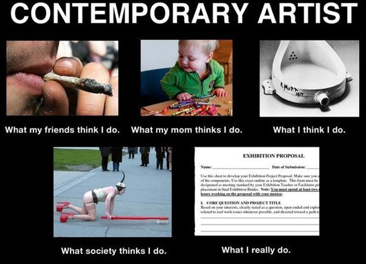
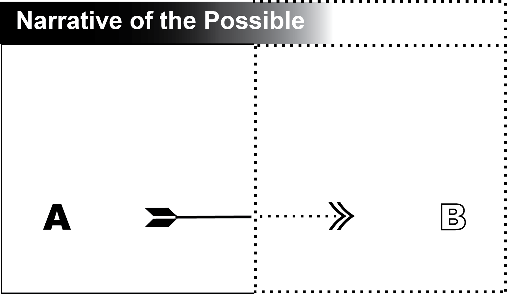
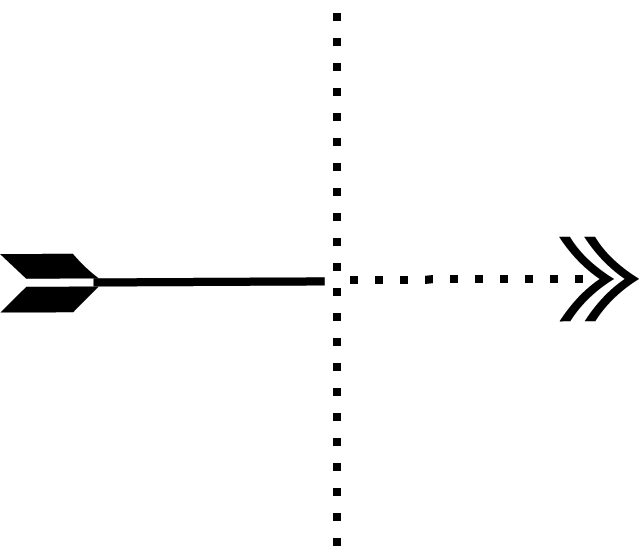

The Expanded Theory
- Tenets 1 & 2: Modeling Labor
- Tenets 3 & 4: Labor Changes
- Tenets 5 & 6: Competing Narratives
- Tenet 7: Patterns and materials of conceptual labor
Tenets 1 & 2: Modeling Labor
Summary
Tenet 1: Labor can be modeled with fundamental components
Tenet 2: Individuals experience work through a unique mental model
Core Concepts
- We work according to our model of work.
- Who we are is part of how we work
- An individual’s internal model of work is their reality of work
- Complex labor requires a model with many properties and rules for how they interact
- Work can be hard to see
- Work changes as you do it
- Comparing models is important, legitimate work
- Conceiving of work is hard work
- Models must be revealed
- Models must be compared against reality
- Models may be applied without being understood
Tenet 1 is the core proposition of the Theory — that we can imagine a useful and dynamic representation of labor — a model — and that we can place the fundamental parts of that representation into three distinct categories. Tenet 2 acknowledges that individuals are the ones doing the imagining, each operating with models of their own conception.
Given any description of a project, we cannot assume that everyone who does the work it demands will understand it in the terms and structure used by that description. Nor can we assume that the description is exhaustive for all circumstances. Even when labor is thought to be “brainless” and routine, we review the conditions of a project and load them into our own mental model. Though this model may refer to external instructions or materials, our models are what we directly engage with.
“What am I trying to do here?” is a classic statement to initiate a new model. We ask this question of ourselves and our circumstances, and then work according to the best answer we can get.
Introduction
What is the end result of perception? What is the output of linguistic comprehension? How do we anticipate the world, and make sensible decisions about what to do? What underlies thinking and reasoning? One answer to these questions is that we rely on mental models of the world. Perception yields a mental model, linguistic comprehension yields a mental model, and thinking and reasoning are the internal manipulations of mental models1.
— Philip Johnson-Laird
A profound divide separates how we experience work as individuals, and the role that our labor occupies in society. We experience work as actions executed by our minds and bodies, but work is traditionally defined and judged by external qualities. Disciplines, jobs, and careers are defined by their appearance, their names, by the effect of a worker’s actions on the outside world, by conventions and materials, and by arbitrary or politicized terms.
There is no guarantee that an individual’s experience of doing work will match the way they are told it should be done, how the results of their efforts will be perceived, or even their own explanation — to themselves or others — of what they were doing and why.
Every project, every problem, every new thing to learn has to be translated from its external conditions into whatever internal language an individual worker uses to comprehend and accomplish work. The conventional narrative of work subjugates this thought process to the external conditions of work, as if an individual’s mind is a black box whose only requirement is that it contain whatever machinery is necessary to process the appropriate inputs into the desired output. The Theory describes how it is the other way round in conceptual labor — that the outcome of work is a property of the worker’s mind.
Tenet 1 declares that, inside that black box, the individual’s state of mind reflects the external qualities of work through what we call a model, and their experience of creating and interacting with that model is significant to their labor. While we can identify three basic categories in which to sort the components of any model, Tenet 2 declares that the actual composition and “feel” of models will vary from one person to the next. Whatever form it takes, an individual’s model is the interface through which they do work. The decisions made, actions taken, and understanding developed by an individual in the course of their work are organized within the paradigm of their specific, up-to-the-second model.
The Core Concepts in this section articulate the significant implications that follow from defining an individual’s experience of work in a detailed model.
Tenet 1: Work can be modeled with fundamental components
The concept of a “mental model” has a well-defined presence in many disciplines including cognitive science, psychology, human-computer interaction, and system dynamics. A handy summary of the history and current state of mental models can be found in the literature review of a 2016 study that asked middle-school students to draw their mental models of Google2.
The modern conceptualization of ‘‘mental model’’ dates back to Scottish psychologist Kenneth Craik (1943), who defined mental models as ‘‘small-scale models’’ of reality (Johnson- Laird 1989; Westbrook 2006)….Doyle and Ford (1998) analyzed these varying definitions and proposed the following conceptual definition based on how the term was most commonly being used within the field of System Dynamics: ‘‘A mental model of a dynamic system is a relatively enduring and accessible, but limited, internal conceptual representation of an external system whose structure maintains the perceived structure of that system’’ (p. 17). A more broadly applicable definition of mental models is offered by Besnard et al. (2004): ‘‘simplified, cognitively acceptable versions of a too-complex reality’’ (p. 119).
Cited above, Johnson-Laid’s article, The History of Mental Models3, traces the multiple origins of similar theories to the late 1800s. Johnson-Laird’s work largely founded contemporary psychological Model Theory, which has grown into an international network4 of researchers continuing to develop the field. The literature of Model Theory is rich, ranging from scientific papers5 to books for general audiences6, and should be rewarding reading for anyone interested in conceptual labor.
Much of Model Theory overlaps with the parallel concept of mental models in user interface design and the field of human-computer interaction, or HCI.
Donald Norman (1983), who subsequently coined the highly relevant term/philosophy ‘‘user-centered design,’’ adapted the term ‘‘mental model’’ for the field of human–computer interaction…. Norman described mental models as people’s continuously evolving cognitive representations of a system that incorporate their beliefs regarding the way the system works. Norman emphasized that a person’s mental model of a particular system both guides his/her use of the system and is iteratively (re)informed by his/her interactions with the system across time7.
More recently, a pop-psychology interpretation of mental models has gained traction in the self-help and entrepreneurial fields8. There, models are presented much like apps, with defined sets of features which they will provide the user once installed, with fairly predictable input and output. Were these models software, they would be considered very “high-level” programs. (Code that executes closer to the machine language that runs the physical computer is, perhaps counter-intuitively, called “low level.”) While useful to many from a self-educational standpoint, presenting models in this way restricts them to a scale and rigidness that, ultimately, isn’t fully compatible with the lower level at which models must operate in the Theory.
Continuing the metaphor, we could say that models in the Theory sit somewhere between the lower level Model Theory and higher-level models of HCI. Model Theory aims to empirically describe qualities of how the human mind operates and interacts with the world, so the rules for its models are borne of research and data. HCI certainly employs rigorous observation in its work with models, but the end use of such data is much more specific — to “provide predictive and explanatory power for understanding the interaction9” between a person and technology. Similarly, the Theory is organized around practical description and useful prediction rather than discovering and describing true principles of human psychology and neurology; however, it aims to provide a framework that operates at a low-enough level that it can describe the interaction between a person and a task of any kind or size that they have set themselves to.
Both paradigms describe models in many ways that support the assertions of the Theory. That models are personalized and must be represented carefully to be understood. That using and updating models is a cyclical process. That models provide more deductive conclusions than can be easily considered all at once by the author of the model. That we can use our prior experience to formulate novel explanations from incomplete information10.
The Theory’s major departure from either discipline is in constructing models with the three types of fundamental components. This is a practical rather than empirical matter — the Theory doesn’t intend to prove that, from a neurological standpoint, there are only these three components of all mental models. Rather, it intends to present a coherent and useful conceptual framework that proceeds from interpreting of our experience of labor according to these three categories. The purpose of the Theory is to assist in comprehending and using one’s own mental models to solve problems, accomplish projects, and self-educate. So conceptual labor should be compatible with Model Theory, the work of HCI, and most other fields that attend to mental models. It is not meant as a referendum on the conclusions of any field’s research, but as a complementary model-of-models to be used in the furtherance of labor of all kinds.
In How to Use the Theory, we diagrammed the components of a model. Here we will examine the basic criteria by which we can define each component, referring back to the example in that section frequently.
The Fundamental Components of Labor
- Actors
- Work
- Context
Actors are anything performing work or work-equivalent actions. An individual at work is the typical actor within a project. However, as we saw in the example in How to Use the Theory, when our model relies on the work done by other parties, those parties become significant enough to be actors, whenever that work was done. We can be co-actors with automated equipment, materials and their properties, other humans, software, corporate policy, and even a set of instructions such as the rules of a game or the directions on a map.
It’s easy to see how active devices like machines and computers can become actors that we must keep track of — often to such a level of detail that we must create a sub-model of their labor. But there’s no reason that a significant, non-human actor has to be something you have to plug in, or even something that actively does new work as you do. Trying to parse a faulty map may require you to imagine the map “diverging” or “forgetting” or “not realizing” things about the land as you build a model that can translate between the map and your experience. Though the map is an inert object in physical reality, it can seem to inflict decisive change within the reality of your model when animated by your conceptual labor.
Work
Work is any action taken by an actor that contributes to their labor. That contribution is a matter of perception and can be designated either before it begins by the actor’s intentions, or later by its results as observed by another actor, or by the actor’s conscious decision to consider certain actions as legitimate work.
Work vs Labor
An important distinction between work and labor is that work belongs to an actor and a context, while labor can contain many actors who can do many different kinds of work in many different contexts. In our example, our conceptual labor encompassed the different types of work performed in each subsequent model, some of which applied to the original task (“hike the trail”) and some of which applied to the models themselves.
In the terms of the Theory, then, labor is the whole process of actors doing work within contexts to complete a project, following narratives produced by their models to do so.
Context
Context is the total set of all conditions that the actors believe to be relevant to the execution of work as part of a project. An actor’s belief is the defining feature. This definition does not suggest that actors can or should know everything that matters to their labor — though it’s certainly exciting to feel that you do.
The belief of each actor is crucial to the central problem in our example. Erroneous assumptions about the conditions of a project are, by definition, treated as true until disproven. The map in our example was neither wrong nor right. It contained ambiguous, static information that our conscious actor interpreted according to the context of their working model.
There are assumptions or beliefs hidden within the definition of what a “map” is, as well as the definition of this particular kind of map. You would expect this map to leave out more information than it contains — you don’t need detailed topographic data as long as you know where to turn.
An expanded definition of Context 1 The Map from our model would include the following beliefs:
The Map
which:
accurately represents open, passable trails
which:
lead to where you are going
leaves out information you do not need
does not leave out information you do need
Put this way, we can see that a map drawn by a friend is more like a transit map11 than a geographic record.
These are reasonable things to believe about the map, but they are still beliefs. The map could neither tell you about itself nor update its own content, so we had no outside verification of the definition of this context beyond our observations. When we began to doubt our beliefs, we had to interrogate this context. When we say a map “says” or “shows” something, we treat it as a proxy for the beliefs of its creator. Hence the necessity of adding Context 3 - Model 2 - Your friend.
Context is potentially the most complex of the fundamental components, since our beliefs about the world and our interactions with it often contain many complex models themselves12. When interrogating a context we are not entirely certain of, we are almost guaranteed to find relevant models within it which we have not yet fully defined to ourselves.
Tenet 2: Individuals experience work through a unique mental model
The fundamental components are simply categories, and very basic ones at that. We can use the terms actor, work, and context to distinguish between fundamentally different areas of our labor, but we use much more concrete terms and finer distinctions to actually accomplish work.
Deconstructing our labor into the terms of the Theory is like diagramming a sentence into the parts of speech. It is a structure that only has meaning when we fill it with our thoughts and ideas.
Were this not true, we wouldn’t see the countless workplace and classroom strategies designed to resolve the differences between how individuals conceive of a problem. Over the course of our labor as individuals, we constantly imagine new models filled with specific, momentary meaning. We can do so with shared or personal languages, non-verbal yet specific strategies, and with a freely mixed combination of emotional and rational responses.
We work according to our model of work13.
When we construct these models to work through, they necessarily imply judgements of what is and isn’t legitimate work. At any given moment while working, we strive to do what we consider to be work and to not do anything that we think will get in its way. If we are not passing judgement with our conscious minds, we may do so with our hands simply by where we choose to place them on our materials and tools.
Who we are is part of how we work
The Theory emphasizes the individual’s experience as a defining quality of work, but we can also see that there is an element of subjectivity to how every fundamental component is defined. A human actor’s understanding of the components with which they build their models is a crucial part of their labor.
An individual activates other actors by attempting to understand their behavior. The unseen walls of a maze may stand still, but to someone building a mental model by which to navigate, the imagined walls constantly shift places as they work their way through. This isn’t to say that we must invent a whole personality for non-human actors, but that we can reasonably expect self-talk that affords agency to relevant parts of the outside world such as “the maze goes this way” or, in the case of our map “this path might not be the one I think it is.”
Statements like these are a way of recognizing that existing conditions can be activated by our labor in unknown and dynamic ways. In the Theory, we call these externalities that we perceive14 the context. By definition, context is entirely dependent on an individual’s understanding of it.
The designers of our maze aren’t doing anything while we walk it, but if we find out that they were drunk when they made it, everything around us will seem to change in that moment of clarity.
It’s no great revelation that what we know and understand can affect our labor, but countless states of mind can affect the composition of our models by the same mechanisms. Why we believe something can be more influential than what we believe. Our preferences can become patterns of working, our professional training can shape our very ability to perceive work, and anyone who’s had a sleepless Monday morning should be intimately familiar with the ways in which biology can transform labor.
An individual’s internal model of work is their most “real” version of work
Statements such as “I’m doing this” or “I should do that next,” and their implied conceptual structures construct the mental reality of labor. External qualities of the work are contextualized within this mental reality. This includes evidence of the effects of one’s labor, belief in the the necessity of it, and systematic theories of how one does that labor.
The simplest demonstration of this Concept is an experience we have all had at some point — that of feeling effective while you work only to later discover that you made no progress. This Concept is just another outcome of the executive functions of the human brain. Our mind weaves a coherent narrative from observations and experiences which are only a small sample of the world around us. These narratives are anything but reliable or complete. In fact, many disciplines are occupied with the study of how our minds fill in the gaps, including neuropsychology, visual studies, and artificial intelligence15.
When we recognize that labor is a narrative constructed by an individual, we can see that the “reality” of that narrative is a function of an individual’s perceptions, beliefs and actions as much as it is a reflection of factual conditions.
Complex labor requires a model with many properties and rules for how they interact
If we understand that such narratives are incomplete by nature, it follows that we would need a method to imagine what a single narrative leaves out. To do so, we must represent the relationships and behaviors of the facts, beliefs, actions, and perceptions that narratives emerge from. A model is such a representation; it is a proposal that things and ideas are a certain way, that they interact according to particular rules, and that they exist in a specific circumstance. Models describe possibilities, while narratives only describe procedure.
Work changes as you do it
Even in the conventional narrative, work changes — it proceeds from incomplete to complete. However, the many possibilities within models present different yet related manifestations of work. The Theory distinguishes between work with static, known requirements and work which changes its own fundamental conditions and requirements as it proceeds.
For example, imagine the work of driving a car. On a straightaway, things (usually) change along one dimension — the car goes from start to finish. But if you are driving cross-country, the nature of what you must do to approach your destination will also change. Driving on a side street requires significantly different work than merging onto the highway or finding parking. A road trip must navigate not just the highways but also the types of driving that must be done, the relationship between all the tasks required to get to the destination, and change its own plan according to the results of their successes or failures. This work has an extra dimension beyond going from Point A to Point B.
Work can be hard to see
Regardless of their complexity or technical difficulty, models can contain work that is neither clear nor obvious. When we choose to work according to one of the many possibilities that a model describes, we do so by momentarily turning away from all the other possibilities. If you were a passenger in a car entering a busy highway, you would want your driver to be focused on the cars in front of them, not thinking of where they’ll eventually park. When we say that we “focus” on work, the metaphor of sight argues that we can pay detailed attention only to a specific interpretation of our labor.
Comparing models is important, legitimate work
Work does not just happen within models — it also happens to them. This is fundamental to the Theory. We do important work by imagining, maintaining, comparing, and understanding models. Given their dynamic and personal nature, we cannot assume, without critical assessment, that any given model will bear out a comparison with alternate models, such as those provided by our observations, obstacles, or our curiosity.
Conceiving of work is hard work
This Concept is explored in depth in the section Expertise Grows out of Conceptual Labor.
Models must be revealed
Models must be compared against reality
Models may be applied without being understood
The complexity of working models and our tendency to focus on the parts that matter most to us means that we can’t assume that we completely understand how they operate before we use them.
Our models are often constructed out of complex concepts that we have absorbed at over our lifetime, especially if we are working in an area which we have studied or trained in extensively. It is easy to assemble a mental model that leads us to surprising conclusions simply because it is hard to consider every possible outcome of a usefully-complex model16. When we think of using a camera in a project, we may think of taking pictures before we think of charging its battery or cleaning its lenses. In the same way that we use computer programs or power tools to do work without knowing exactly how they operate, we don’t necessarily know everything about each concept we use to assemble a model, and often focus only on the features that are of use to us. Creating a mental model of work is a matter of imagination and perception as much as it is a matter of skill or knowledge, and it is subject to all the hazards and critiques that we can apply to perceiving or imagining anything.
Case Study: Good Intentions and Propaganda
Helping vs Being Helpful
Consider the basic idea of help as work. Many of us like to think that we are helpful people. If we are working in good faith, we think that when we are helping, this is equivalent to being helpful. However, a helpful act is defined by its effect on the world, not necessarily the actions of the helper. The basic motion of petting a cat produces very different results whether you do it with or against the direction of its fur.
The things one does to be helpful are defined by their own narrative of what helping looks like. Without doing the conceptual labor required to bring their narrative in line with the present conditions of the work and keep it there, a person who is helping can have the effect of being not helpful.
We can see how helping can sometimes come at the expense of being helpful by plotting our actions on the Helping Matrix:
The Helping Matrix
| Helpful | Not Helpful | |
|---|---|---|
| Helping | ||
| Not Helping |
In the Helping Matrix, one hopes to occupy Helping / Helpful, but can easily land in Helping / Not Helpful if they are not careful. Not Helping / Not Helpful is an obvious position to occupy, but sometimes Not Helping can be Helpful.
Once you have done the conceptual labor to define and identify Helping / Not Helpful a few times, you will see it everywhere.
The Helping Matrix embodies the conceptual labor that it takes to compare the model of your behavior that you believe to the one presented by the evidence of your actions. This is, of course, a fundamental process that applies to nearly any work. One can make matrices similar to the Helping Matrix according to many interpretive pairs, such as:
| Functioning | Not Functioning | |
|---|---|---|
| Functional | ||
| Dysfunctional |
Or
| Is Useful | Is Useless | |
|---|---|---|
| Looks Useful | ||
| Looks Useless |
Or the often devastating Rightness Matrix
| Is Right | Is Wrong | |
|---|---|---|
| Feels Right | ||
| Feels Wrong |
These matrices should not be read as an appeal to objective rationality. They do not imply that there is one way to always end up in the right quadrant. After all, you can be certain of the rationality of your behavior in any of the quadrants. These matrices appeal to the process employed to interrogate your model of reality, and to critically assess the context in which you declare your actions to be rational.
The Uses of Helping / Not Helpful
The Simple Sabotage Field Manual17 can be read as a classic text on the uses of Helping / Not Helpful. Published during World War II by the Office of Strategic Services (the precursor to the CIA), the manual was a resource for citizen resistance in Axis-occupied countries. The tactics within conceal destructive activities behind the allure of the conventional narrative of labor. The plausibility of being a feckless or incompetent worker, earnestly but poorly doing “real work” easily overshadowed the reality of someone doing sophisticated conceptual labor to carefully manage the appearance and ultimate effect of their work.
Since declassified, the CIA has made the Manual available for download, noting that while some of the tactics are outdated, “others remain surprisingly relevant. Together they are a reminder of how easily productivity and order can be undermined.” The agency goes on to list classics, including:
- Managers and Supervisors: To lower morale and production, be pleasant to inefficient workers; give them undeserved promotions. Discriminate against efficient workers; complain unjustly about their work.
- Employees: Work slowly. Think of ways to increase the number of movements needed to do your job: use a light hammer instead of a heavy one; try to make a small wrench do instead of a big one.
We can see this document as a strategic deployment of the conventional narrative as a smokescreen to hide subversive conceptual labor. The sabotage that the OSS encouraged would fit into a highly-plausible narrative in which poor results came from conventional failures — infighting, vanity, or incompetence. This avoided calling into question the instructions and judgments of the occupying Axis troops. The captive workers simply failed to measure up to these correct instructions, a conclusion which did not challenge the Axis model of the world (or the conventional narrative).
This is an important, widespread trick, used by friend and enemy alike, that the Theory can help us critique and resist. The trick is, in short, to tell a tantalizingly simple story about work so that people who might object to its results won’t do the conceptual labor required to see the big picture or question the narrative.
This is the core mechanic of propaganda — weaponizing a simple narrative to prevent conceptual labor. Political and social change and the accumulation of power all require ongoing, coordinated labor. To keep such complex operations on track, the individual models through which the converts work must be normalized and simplified. The active re-interpretation of work that conceptual labor requires is directly opposed to the entrenched agendas that propaganda serves.
Propaganda’s relationship to how we think and talk about about work is apparent in the the sort of contemporary workplace sloganeering typified by Facebook’s infamous “Move Fast and Break Things.” While that individual slogan hasn’t survived the obvious question of “what did Facebook break?” the social media giant is still in the business of spreading reassuring narratives of work. This task was important enough that, until 2019, Facebook maintained a private print studio called the Analog Research Lab to create colorful, high-quality prints that say things like “Stay Focused And Keep Shipping” and “I Am So Thankful for You in My LIKE18.” The ur-message conveyed by the posters that make their way from the ARL to employees’ walls is Your work has known, knowable and good results. You will make the world a better place. Or even more simply put — You are helping and helpful.
From the perspective of the Theory, the mechanism by which propaganda like these corporate slogans hijack our mental models of work is a simple one. Human actors are relieved of the conceptual labor to continuously define and understand the ultimate context in which they work. It can be treated as a fixed quantity, nullifying Tenet 3, and the meaning and effect of all of their actions will proceed from the certainty of this context and inherit its norms and values.
If “connecting people” is the most abstract and basic purpose of all the labor of Facebook employees, and if that is an inherently good thing, then the missteps and questionable practices along the way can be excused because the “mission” is good. Of course there is no room in a busy work week to think “should I even be doing this work?” The challenges facing a Facebook employee can easily be complex and deep enough to exhaust their capacity for conceptual labor. So it’s a practical matter to make sure that workers’ critical powers are focused on the work that serves the agenda of the company and not on the structures and super-structures that contain that work. The friendly, colorful encouragement from an attractively designed poster on the office wall, appealing to deeper human motivations, keeps conceptual labor within appropriate boundaries.
This context-fixing mechanism is the same one that allows “normal” people to support totalitarian regimes. Hanna Arendt famously called this deployment of working norms “the banality of evil.” It is a sort of institutional response to the trolly problem: if it is hard to convince someone to kill another human with their hands, give them a lever. If the target is far enough away, abstracted and collectivized, and enough machinery separates you, your acquired, emotional, and critical models of working will recede. Simple, reliable ones remain such as “I should do my job” or “I should be professional” or, as Arendt saw, “I should do my duty.”
Models can be hard to see
Models must be revealed
Propaganda needs to spread to succeed, so it has to install itself into the minds of individuals who will then repeat and reinforce its worldview. Converts no longer have to look at the posters — they’re repeating the slogans in their own head. These slogans do work in two directions at once. They forward a particular agenda, and they make the actor’s adherence to that agenda more palatable by presenting a simplified context fixed in place by euphemism and a promise of personal advancement.
To meet propaganda with conceptual labor is more than to simply “think different” or “question authority”. When doing conceptual labor, the workings of mental models must be revealed and compared with other models, including the model presented by real-world evidence19. Propaganda models labor — in politics it presents models of the labor performed in social relations and the interpretation of the law, and in our example it models the social effect of the work performed at a corporate job. It’s no use to argue against individual points made by propaganda as long as the debate occurs within the worldview that the propaganda exists to maintain. Propaganda is adapted to resistance, meant to overwhelm, contain, and exhaust argument more than it is meant to prove anything.
Conceptual labor does not commit to a position. Conceptual labor is a continuous process, just as propaganda is, so it is the means by which we construct, critique, and work through models of a world that includes propaganda and self-concealing, bad-faith arguments. Revealing, comparing, and refining our own mental models, continuously as we work, is the most basic process of conceptual labor. If we refuse to do this labor, we can be convinced to believe things we would find repellant if we saw them clearly.
Tenets 3 & 4: Labor Changes
Summary
Tenet 3: Conceptual labor is required when all components of a model are dynamic
Tenet 4: We tend towards models with static and well-defined components
Core Concepts
- Models embody beliefs
- We follow the conventional narrative if we believe that our model has as least one static component
- The conventional narrative is the default narrative of work.
- We have to do conceptual labor because the conventional narrative fails us all the time.
- We resist conceptual labor for many reasons
- It is difficult to redefine work at the rate at which it changes
Though labor involves change by definition, it can still be systematized, described, and planned in effective ways if at least one of its fundamental components can be treated as a known quantity. This is conventional labor — the work we do when we think we know what to do. In this type of work, being confused about the job is not part of the job.
However, work behaves much differently when all significant components are dynamic. When the actor, labor, and context are all able to change on their own accord, and able to change the other types of components, the work takes on another dimension. In this type of work, solving one’s confusion, coming up with new instructions, and executing them are all considered part of the same project.
Introduction
Tenet 3 declares that labor behaves much differently when “all components of a model are dynamic and interdependent” This is the most basic condition of Conceptual Labor — when the actor, work, and context are all able to change on their own accord, and changing one component will meaningfully change the others. In this type of work, managing our environment, solving our confusion, coming up with new instructions, and executing them are all considered legitimate forms of work.
Tenet 4 states that “We tend towards models with static and well-defined components.” In other words, without questioning our beliefs about the conditions of our labor, we will default to the conventional narrative. Critically observing and responding to how and why you work is in itself a departure from conventional labor. There may be compelling reasons to stick with the conventional narrative, but it often turns out not to be true or useful. Conceiving of new, accurate narratives of work while it changes is not easy.
Tenets 3 & 4: Labor Changes and We Must Change With It
Models embody beliefs
Listening for your own laughter is a good way to find evidence of this tenet. Daily life is full of circumstances that reveal the ideas we showed up with to be hilariously, or frustratingly, wrong. You could be looking at art you don’t understand, enjoying an an in-depth conversation with a friend, trying to predict what a client wants, talking to someone when you don’t quite speak the same languages, or trying to figure out why following the instructions that came with a piece of furniture didn’t work.
In each of these situations, think of when and why they might cause you to laugh at something other than a joke. Whether it come from frustration or delight, there is a type of laughter that marks the point when the idea we showed up with breaks to pieces as it collides with reality. Sometimes we watch an absurd but undeniable truth steamroll our perfectly reasonable expectations, and other times we realize that it’s our notions that are ridiculous. Or we simply discover that we had no idea what we were expecting.
This follows from our previous Concept that reminds us that we are often able to conceive of and interact with models that are too complex for us to completely understand all at once. However aware we are of our models, they express assumptions about the state of the outside world, our presence in it, and the conceptual landscape we project upon it. Models are the practical manifestation of the worldview that shapes their assumptions. If we are not completely convinced of this worldview, we must do conceptual labor — we must sculpt our models, examine the beliefs that they embody, and test them against our observations and other potential models.
We follow the conventional narrative if we believe that our model has as least one static component
As soon as we are confident that we can meaningfully define at least one fundamental component of our model and rely on that definition not to change, we can weave a conventional narrative around it. Even if every other component is in chaos, we can at least plot a path from incomplete to complete using our finite component as a reference point.
In the process of doing conceptual labor, we may develop an understanding of our work, our circumstances, and ourselves that will clarify our model enough for us to find conventional narratives within its boundaries20. Our conceptual labor can resolve enough questions and remove enough obstacles that we do figure out where we are going, and can predict what the path ahead will look like.
Though the conventional narrative may seem like the opposite of conceptual labor, we can switch modes at any moment at any scope of a project. When trying something new, such as learning an instrument or playing a new sport, we shrink and expand our context in the process of drilling new skills into our memory. Doing so lets us focus our narrative on the portion of the whole project that we are immediately working on, so that we can crystalize formerly unclear activities into conventional labor that we can reliably accomplish.
This is a powerful and effective pattern of working. We must remember that conventional labor is not an inherently impoverished way of working. Why do the conceptual labor to produce a reliable and robust model if not to take advantage of the clarity it can offer? We often do conceptual labor expressly to produce a straightforward narrative that we can follow with confidence.
While some work continuously rejects conventional narratives, there is nothing inherently wrong with following a conventional narrative that one has arrived at for good reasons. As long as your model holds true, believing that you know what to do is as good as knowing that you do — until something from outside your frame of reference intrudes to prove you wrong.
The conventional narrative is the default theory of work
Whether or not our beliefs are well founded, following them without question will produce a conventional narrative. This is the narrative in which our beliefs are correct, incomplete conditions should be completed, and tools are to be used rather than modified. It is, ultimately, the narrative we follow to do what we think should be done.
The default nature of the conventional narrative gives it a sort of gravity that draws all conceptual labor towards it — it is the most simple and obvious of options. We may quickly alternate between the chaos of conceptual labor and the clearer narratives that we draw from its conclusions, but we tend towards comprehensible work to produce results.
To understand why that is, let us review the the theory of non-conceptual labor — the Conventional Narrative of work.
In the conventional narrative, there are two different kinds of work. The first kind is the work that is directly required to complete a project . The second kind is everything else we must do to be able to do the first kind of work. This secondary work can take the form of figuring out just what it is we have to do, or it can be management and preparation — of our tools, our collaborators, and ourselves. Once we are ready to work, we gather the resources and tools that we know we need, and then we apply them with as much skill as we can, using them to execute our intentions, to do what needs to be done. The difficult parts of this work are being skilled enough, knowing and following the right steps, and working fast or hard or long enough.
If we think this way as workers, then the first kind of work seems like the Real Work. “Real” Work is the work that applies directly to the fundamental needs of a job we wish to do. This is work that would exist whether or not we attempted to do it. A broken pipe must be fixed for plumbing to be done, a novel’s words must be typed for writing to be done, data must be transferred for information to be communicated. The Real Work doesn’t have to be completely known, but it can be completely found out.
The second kind of work is then determined not by the requirements of the job but by the qualities of the worker attempting to complete the job and by the conditions under which they work; how much there is to be found out depends on how much the worker does or doesn’t know. How much information needs to be revealed relies on what obstacles lie in their particular way. None of this, of course, is Real Work — it is investigation or preparation. A perfect worker in perfect conditions would greet a job with total knowledge of what the job requires to be completed, and then do those things without hesitation.21
This is the conventional, linear narrative of work, and it is the default — if not preferred — theory of work in most cases. In this theory, projects are a context in which some conditions have not been met, and work is the process of changing things within that context to meet those conditions. There may be many different paths from start to finish, but this narrative says that these paths are straight by nature, and that they end (with a “thock, ” as Ursula K. LeGuin put it22). If these paths appear circuitous, we blame our efforts to understand them or our working conditions for not being ideal. We feel that we’ve discovered one of these ideal paths when we say “That’s all I had to do?” after expending great effort on something that just wasn’t working.
The idea of Real Work is incompatible with Tenets 1 and 2 of The Theory. The time and effort individuals spend managing mental models would not count as Real Work, nor would the life experience that slowly constructed those models in the first place. Real Work, it seems, is obvious with common sense, so just do it.
Work is not this simple, and we all know it. Yet we cannot escape the conventional narrative. It is like a uniform that fits no one, yet is issued to everyone. Tailoring it to our individual needs seems extravagant or difficult, so we end up piling on alterations and accessories that compensate for a fundamentally dissatisfying outfit.
This theory of work persists not because it meaningfully describes our labor and projects, but because we can use it to measure and plan. Evaluating the success of a job is easiest when the job and the work done to complete it are both definable and finite. The conventional narrative is only a useful illusion, not a fundamental condition of all work. It is the illusion favored by institutions and individuals whose success relies on easily communicated value, smoothly repeatable transactions, and the appearance of competence.
We have to do Conceptual Labor because the conventional narrative fails us.
To repeat a previous section, doing the wrong work is a problem even if you do it well. The very existence of the cliché “work smarter not harder” is evidence of the false dichotomy, supported by the conventional narrative, that gets us into this situation. Why should working “smart” and “hard” ever have been separated? Smart is not inherently easy, hard is not inherently stupid.
Following the conventional narrative too far, even in good faith with “the best and the brightest” on the problem, can still lead to an application of the “right” solutions to the wrong problems, or at the wrong times, or in the wrong amount, or in some other capacity that is wrong for a reason no one understands.
Our tendency to avoid conceptual labor and our preference for models with at least one fixed component as stated by Tenet 4 causes systemic problems when work is as fluid as Tenet 3 describes.
This brings us to our next core Concept of Conceptual Labor
We resist conceptual labor for many reasons
The Core Concepts of Tenets 1 and 2 outlined the way in which doing conceptual labor can be difficult. Besides the fact that it’s generally easier work when you understand what you’re doing, there appears to be a deeply-rooted pattern of human psychology that resists the conceptual labor required to critique the conventional narrative of our behavior.
We can see evidence in the body of research supporting “dual-process23 theory,” which separates the mind into System 1 and System 2 thinking. Daniel Kahneman defined them this way in his popular Thinking Fast, Thinking Slow24:
- System 1 operates automatically and quickly, with little or no effort and no sense of voluntary control.
- System 2 allocates attention to the effortful mental activities that demand it, including complex computations. The operations of System 2 are often associated with the subjective experience of agency, choice, and concentration.
A common thread of Kahneman’s work is how reluctant humans are by nature to engage System 2. Unsurprisingly, his research frequently addresses how we physically see the world. Optical illusions, attention, and what is called associative coherence offer insight into the way that the brain, via System 1, subconsciously constructs a coherent picture of an often chaotic world. The field of visual cognition dives further into the specific behavior of these phenomena. The Thinking Eye, the Seeing Brain, an accessible introduction to the field, opens with a list of common assumptions about perception which have been repeatedly disproven by experiment.
- the myth that seeing provides a faithful record of the world in front of us
- the myth that seeing occurs automatically and without any thoughtful activity on our part
- the myth that our eyes are responsible for our sight
- the myth that we can think without using our senses25
Neuroscience has shown that the underlying, biological mechanics of how the brain tells a useful story of the world are far less reliable and unbiased than we once thought26. It seems that there is something about our brains that prefers to follow straightforward narratives rather than navigate the murky territory where we find conceptual labor.
While there is no end to the ways in which we can be enticed by a conventional narrative, our motivations to overlook conceptual labor often fall into one of the following categories.
Politics
Stakeholders in a certain narrative may characterize it as logically obvious as part of a bad-faith argument in favor of keeping things the way they want them to be, or to provoke a certain reaction.
Strategy
Even when knowing that conceptual labor is important and required for the work that you’re doing, there are real-world limits on how much exploration and questioning one can do. Many disciplines are defined by the structures put in place to manage and segregate conceptual labor from conventional labor27.
Identity
The established, most-visible narrative of a job may be central to an individual’s worldview, and questioning it may be intensely destabilizing.
Perception
Conceptual labor is hard and hard to see, so it is common to overlook even when doing earnest work in good faith. “Functional fixedness” is a common term for this.
Perspective
Individuals doing labor understand it differently than observers watching them. It makes sense that they would disagree as to the nature and character of their work.
It is difficult to redefine work at the rate at which it changes
The subjectivity of the term “difficult” is relevant to this concept. For any way of working, easy tasks will be treated differently than difficult ones. This Concept is simply a warning not to treat this task as easy.
Rate, here, is not a matter of speed as much as it is proportional, dependent change. Our actions set the tempo of our labor. We can imagine fast fluctuations in the context of musicians or surfers, but big, slow moving problems can outpace our ability to change our minds through pure complexity or depth. The implications of changing part of one’s worldview cascade quickly through the rest of it, and it is easy to be caught doing irrelevant or wrong-footed work while trying to update your working models.
If we think of adjusting a model and doing work as separate actions, trying to keep them in sync must be a continuous, cyclical process. While labor remains conceptual, updating your model will redefine your work, and vice versa. They must both keep up with each other.
Case Study: Industrious Fictions
There is a tension between the assertions of Tenets 3 and 4. These two tenets say, essentially, that conceptual labor involves complex, multi-dimensional change, but as humans we prefer to do straightforward work. This tension drives many stories of best laid plans gone wrong, and can be useful in trying to understand what Horst Rittel and Melvin Weber called “wicked problems.”
The problems that scientists and engineers have usually focused upon are mostly “tame” or “benign” ones. As an example, consider a problem of mathematics, such as solving an equation; or the task of an organic chemist in analyzing the structure of some unknown compound; or that of the chessplayer attempting to accomplish checkmate in five moves. For each the mission is clear. It is clear, in turn, whether or not the problems have been solved. Wicked problems, in contrast, have neither of these clarifying traits; and they include nearly all public policy issues–whether the question concerns the location of a freeway, the adjustment of a tax rate, the modification of school curricula, or the confrontation of crime.28
We can see the roots of this opposition in a deeper disconnect expressed by Tenets 1 and 2. While Tenet 1 lays out some terms to describe an individual’s experience of labor, Tenet 2 recognizes the boundless variation of that experience. The core concepts of Tenets 3 and 4 are borne out of the impossibility of understanding the subjects of our conceptual labor without critiquing the models that mediate our contact with them.
Models embody beliefs
The meme What People Think I Do / What I Really Do29 demonstrates this Concept on a broad scale. Popular enough to merit its own generator30, the format laid bare the beliefs embodied in the way that different perspectives modeled the labor of professionals. The joke lands whether or not you do the work in question; the panel “what I think I do,” is just one of many perspectives implicitly compared against “what I really do.” However you see the professions in question, it touches on the shared experience of trying to model what you “really do”. Whether they come from your family or your own biases, perplexingly-durable clichés surround labor that we all have to resist falling into sometimes — scientists must wear lab coats, all artists storm about with palettes and brushes, and lawyers mainly give speeches in courtrooms.
 Meme image by artist Garnet Hertz that popularized the format.
When we sit down to work, we do so through a model of our labor in our head, and with it comes a variety of beliefs and assumptions. We work according to that model, subject to the implications of the picture it paints, whether we understand those implications or not. Anyone who has watched a robotic vacuum bash itself repeatedly into a corner has seen a real-world example of this.
The vacuum is an actor that has reached the limit of its ability to do conceptual labor. However much its training, foreknowledge, or programming allows it to learn, the unseen wall represents the boundary of its ability to modify its own instructions. Attempting to do the work that fits its limited model of the world despite the ways in which reality has contradicted it, it performs useless actions that appear pathetic to observers who can do flexible, continuous conceptual labor.
We follow the conventional narrative if we believe that our model has as least one static component
The cornered robot is following its beliefs, but for a more functional example of how this works, consider being lost in a city completely unknown to you.
Example
If you know the name of where you are going but have no map, and no guide, you will definitely have to do conceptual labor get to your destination.
If you do have a map, then your context is static and independent of the other components. The realm in which you have to work was previously only defined in your imagination — a city of unknown and infinite possibilities. Assuming it’s an accurate map, your work to get to your destination won’t change the map. Knowing your context, you can engineer a set of reliable instructions to get to your goal. The map and the journey will certainly change you, the actor, but again the map remains fixed.
Now, if you don’t have a map, but you have a set of directions to follow, you can still escape the difficult conceptual labor of being completely lost. (Directions here define the work of your model.) You may change along the way as you learn things about the city, and your context will change as you build a picture of the corner of the world through which you travel, but as long as you follow your directions — your unchanging work — your labor will proceed from incomplete (lost) to complete (at your destination).
This example gets more philosophical if we must imagine how you, the actor, could resist changing. Either you are so obstinate that you will not admit that you are lost, or something must prevent you from observing and learning from your surroundings. It’s easier to imagine a robot than a human acting this way, but when we refuse to adjust our models in the face of contradictory evidence, we begin to resemble these robots.
A robot bashing into a wall does so within the conventional narrative, not from a consciously-held purpose. When our labor is unexamined, it will always end up following the conventional narrative, at any scale.
The conventional narrative is the default narrative of work.
A robot bumping into a wall doesn’t know it’s wrong. The most common reasons robotic home vacuums bash into furniture or walls are blocked sensors or lighting conditions that hide obstacles from the device. Our robot cannot avoid what it cannot see. It follows all of its rules perfectly within the worldview it is capable of assembling, and cannot critically observe its own behavior and beliefs “from the outside.” Since we can see the limits of a robot’s ability to do conceptual labor, we can see how the work it does beyond those limits defaults to a conventional narrative.
Because there are fixed boundaries to how much the robot can change as an actor, its beliefs are inherently always “correct.” Because its work is also contained within a finite set of possible actions (however sophisticated those actions may be), it attempts the actions required to take incomplete work to a state of completeness even when they are ineffective. The context in which it works is even more confined than the rooms that it cleans — it works entirely within a world of its own measurements and observations, lacking the ability to generally perceive and model its environment through abstract inferences31.
There’s an obvious discrepancy between where walls are in the real world and where they are in the robot actor’s working model. But we would do well to remember that “obvious” is a matter of perspective here. Even when many experienced, intelligent people collaborate in good faith to break big problems down into conventional narratives that can be solved, they can miss salient aspects of reality until it’s too late.
We have to do conceptual labor because the conventional narrative fails us all the time.
The proof of this is all around us. When we watch a robot bash into a wall from an ironic distance, we stand in the same position from which we view our past mistakes — a context that exceeds the boundaries of the context that contained our work. It is when we cannot or do not do the conceptual labor to find such a context that we confidently execute our plans according to faulty models.
Example
Something unexpected happened when the Millennium Bridge first opened to the London public in June of 2000. Thousands of pedestrians flocked to the iconic walking bridge, and while it was certainly strong enough to hold all of them, it demonstrated “synchronous lateral excitation” — it swayed an alarming distance from side to side. No weakness was found in the designs that could account for this behavior. The high-profile bridge “surpassed standards for withstanding weight and wind. Every nonhuman element had been tested.”32
Modeling the human element was the key to an eventual solution. The bridge was designed for a degree of flexibility, but it flexed at a frequency that closely matched that of human walking. That shouldn’t be a problem with hundreds of pedestrians walking at their own rate, out of sync with each other.
We could very reasonably model that situation, in accordance with a sophisticated understanding of physics, in this way:
Model 1
Project: Get hundreds of pedestrians across a river
| Label | Component | Can affect |
|---|---|---|
| Actor 1 | Hundreds of individual pedestrians | Self |
| Actor 2 | The Bridge | None |
| Work 1 | A1: Walk across the bridge | Self |
| Work 2 | A2: Respond to W1 within engineering regulations | None |
| Context 1 | A bridge full of pedestrians within designated limits | None |
Components’ ability to affect each other to a degree that is significant at this very high-level of modeling have been effectively engineered away. A bridge that could be significantly distorted by the crowds walking over it would not be erected in the first place. Whether it would even be considered a bridge is in question.
However, the crowds spontaneously began to sync up with each other — and the bridge.
It turns out33 that people walking on a bridge that starts to shift will instinctively adjust their stride to match the bridge’s swaying motion as it lurches sideways. This will be familiar to anyone who has tried to walk on a fast-moving train and needed to find steady footing as the train wobbled from side to side. But on a bridge, this exacerbates the problem, giving rise to additional small sideways oscillations that amplify the swaying34.
A feedback loop quickly emerged from the sidesteps of the crowd and the slight wobble of the bridge, creating a mass, synchronized rocking motion that caused the bridge to flex much more than expected. In videos of the event, the bridge appears to shake while pedestrians struggle to keep walking in a straight line. In reality, the pedestrians are the ones shaking the bridge, but they all adjust their gaits in time to maintain forward motion, resulting in massive, synchronized lateral forces35.
Model 1.1
Project: Get hundreds of pedestrians across a river
| Label | Component | Can affect |
|---|---|---|
| Actor 1 | Hundreds of individual pedestrians | Self, A2, W1, W2, W3, W4, C1 |
| Actor 2 | The Bridge | A1, W1, W2, W4, C1 |
| Work 1 | A1: Walk across the bridge | Self, A1, A2, W2, W3, W4, C1 |
| Work 2 | A1: Don’t fall down | Self, A1, A2, W1, W3, W4, C1 |
| Work 3 | A2: Respond to W1 within engineering regulations | Self, A1, A2, W1, W2, W4 |
| Work 4 | A1: Respond to W3 | Self, A1, A2, W1, W2, W3 |
| Context 1 | A flexible bridge full of pedestrians within designated limits responding to each other and trying not to fall down | Self, All |
The changes here all seem obvious — of course pedestrians don’t want to fall down, of course they will respond to a movement in a bridge, of course they are all human with human instincts. It’s the way that those obvious yet significant qualities can all affect each other that created the emergent behavior that shook the bridge. The bridge eventually re-opened with an asymmetrical set of dampers to prevent regular patterns of flexion.
For all the successful conceptual labor of the engineers (or the advanced programming of the robot) to break big, vague problems down into smaller ones with solutions that can be engineered or calculated, the failures came not from proposing bad answers to tough questions, but from failing to ask the questions that were not answered at all. The robot does not see the wall, the engineers did not model the human factor, yet they have done all their known work, as it was defined, with great competence and skill.
We Resit Redefining the Narrative for Many Reasons
The engineers of the Millennium Bridge freely admitted what they missed and made the necessary adjustments once they redefined their working models. However, we can’t assume that everyone will, in good faith, do the conceptual labor required to resist conventional narratives and maintain detailed and accurate models of their labor.
Conventional, fixed, or stereotypical narratives can be useful illusions. By focusing their efforts on supporting the established narratives of their work, individuals, organizations, or whole industries end up directing their efforts away from producing their desired effect to representing effectiveness — to look like they are helping, not necessarily to be helpful. This representation is, like our meme, interpreted according to a Conventional Narrative. It can be a narrative designed to convince outside observers, or, like the propaganda in our first case study, directed at yourself to justify your worldview. It can rationalize a situation that benefits you, or simply create a self-reinforcing picture of the world — like the pedestrians’ idea that they were walking forward, not sideways, on a shaky bridge.
We can find troubling examples of this in any profession. Nonprofits and NGOs develop what nonprofit director and theorist Vu Le calls a “shadow mission”
which is often to get as much funding as possible, grow as big as possible, even at the cost of program quality or staff morale, and screw anyone who gets in their way36.
Technologists have “the Shirky Principle” from writer Clay Shirky: Institutions will try to preserve the problem to which they are the solution.37
And from 2008 to 2009, a police whistleblower38 at the NYPD used secret recordings to catch his department systemically manipulating CompStat data to produce politically desirable outcomes — what the TV series The Wire called “juking the stats”.
Bad-faith examples illuminate the deeper problems of sticking to work that looks like work “should” — it will let you down when you’re trying to solve really complex problems.
It is difficult to redefine work at the rate at which it changes
Sociologist Charles Perrow coined the term “normal accidents” to describe the inevitability of accidents within systems that have all three of the following qualities:
- Complex
- Tightly coupled
- Potentially catastrophic39
Human error in such systems is “normal” because it proceeds from rational decisions or predictable responses. The term “tightly coupled” refers to the small or nonexistent margins between components — change in one area will precipitate change in many others at the same time. Tenet 3 describes how conceptual labor functions as a tightly-coupled system. Normal accidents, alas, follow Tenet 4.
For an example of a deadly, normal accident that, despite occurring slowly over decades, outpaced the conceptual labor required to comprehend it, we can turn to the obsolete disease of thymic asthma. Doctor Jeffrey Ritterman told its story in the Permanente Journal in 201740
In the first half of the 19th century, physicians were becoming alarmed by sudden infant death syndrome (SIDS). Healthy infants would be put to bed and found dead in the morning. In 1830, pathologists noted that SIDS-affected infants had enlarged thymus glands compared with “normal” autopsy specimens. It seemed logical to conclude that these “enlarged” glands were in some way responsible for the deaths.
In 1830, the term “thymic asthma” was introduced to describe the “enlarged” thymus glands that pressed on infants tracheas and suffocated them from inside. Surgical removal of the gland had an “unacceptable” rate of mortality, while radiation treatment seemed safe and effective by comparison. So, thousands of responsible parents, on the advice of trusted medical professionals, had their children’s thymus glands irradiated in an effort to shrink them. It is estimated that more than 10,000 thymic radiation “therapy” patients died from cancers later in life before irradiation of the thymus was declared, in 1945,“an irrational procedure at all ages.”41
Knowing what we do now about radiation, this outcome is sadly obvious. However, the deeper error in this story could not be found out within the bounds of the original problem. The thymus glands were never enlarged.
The cadavers used by anatomists to determine the “normal” thymus size were from the poor, most having died of highly stressful chronic illnesses such as tuberculosis, infectious diarrhea, and malnutrition. What was not appreciated at the time was that chronic stress shrinks the thymus gland. The “normal” thymus glands of the poor were abnormally small42.
The thymuses in otherwise healthy infants that died of SIDS were, in actuality, the first large set of normally-sized thymus glands studied by medical science.
It’s tempting to say that this was the result of a lack of knowledge. Had we known more about radiation, or cancer, this certainly wouldn’t have happened. However, the “problem” to which radiation therapy was only one possible solution didn’t even exist, and no one would have figured that out by learning more about radiation. Even if we learned everything we thought was possible to learn about the thymus, that wouldn’t have helped. We needed to expand the boundaries of what the problem was, what could be known about it, and change the ways we drew such lines.
Doing so collided with the boundaries of medical authority, turning absolute knowledge into relative and biased data. The requisite shift in worldview took decades to propagate through the medical profession. Identifying recent medical “facts” whose disproval met with significant resistance, Ritterman makes this appeal
To avoid future errors and their associated harm, I suggest a cultural shift encouraging professional humility and greater questioning of medical dogma. Medical education focused on teaching students this history may help with this cultural shift.
This is not an appeal for better research methods or to fix a lack of education. Rather it wants for more flexible models, ready to redefine the ever changing work of doctors — for more skillful conceptual labor43.
Tenets 5 & 6: Competing Narratives
Summary
5: Conceptual labor requires actors to continuously update their models
6: Part of conceptual labor is understanding and explaining why it is necessary
Core Concepts
- Doing work and modifying the narrative of how you work must happen simultaneously
- Work that modifies its own narrative is a conversation
- In this conversation, we must represent our experience
- The ideal state of this conversation is spontaneous, continuous agreement
- Successful conceptual labor cannot be fully planned, only cultivated
There is work involved in understanding why conventional labor fails or why a narrative of how one should work is wrong. When the conditions of work meet Tenet 3, conventional labor is no longer effective, but it is the mode we will employ by default (Tenet 4). Therefor, attentiveness and sensitivity to the changing requirements of a project can be considered skills in their own right.
Introduction
Tenets 5 and 6 and their core concepts proceed from the effort to clearly perceive conceptual labor and to distinguish it from conventional labor.
Tenet 5 says that if one’s working model is to stay in sync with their labor as it changes, they must continuously update it. As Tenet 4 has shown, when we settle on a definition of work, our labor tends towards the conventional narrative.
Tenet 6 is an outcome of this necessary conversation about what work is, should, or could be. Conventional labor proceeds according to its authority as being effective and necessary. If conceptual labor begins when we question that narrative, then it must include an argument for the necessity of conceptual labor and the new narratives it produces.
Doing work and modifying the narrative of how you work must happen simultaneously in conceptual labor
Conventional labor can be done when at least one of the three fundamental components of work is expected not to change. So it follows that, in contrast, we must do conceptual labor while all three types of components of our working model, including the work it contains, are in flux. Since that is a definitional quality of conceptual labor, discussing this Concept risks becoming circular. We must recognize that the beliefs and intentions of actors doing work can take an active role in determining whether or not work occurs at the same time the narrative that it follows is being modified. The same activities which require deep conceptual labor from an inexperienced actor may be able to comfortably follow a conventional narrative for experienced actors, in which “real work” is separate from metawork such as preparation and management.
Example
If you’re learning to play the guitar, you will greet a practice session of scales and drills you know with a very different narrative than you would one that introduces new material. The distinction between a “new” and “known” scale is one of degrees until it passes a certain threshold, whether suddenly or gradually. So it is not our definition of conceptual labor that predicts how sure of a passage the musician will be during a practice session, it is how sure the musician is of a passage that distinguishes what kind of labor it requires to play.
A thoughtless repetition of known scales and exercises is conventional labor, but a practice session that even threatens to contain unknown material becomes conceptual labor. The session becomes a flexible context, in which the musician watches for and considers the relationship of unknown passages to known ones — assembling a model of what they know, what is happening, and what they’re doing at the same time that they do it.
Discussing this Concept can be useful as a way of critically examining exactly how simultaneous work actually is with meaningful observation of it. The question of shared duration is important — work may appear to finish before its effects have fully propagated or certain actors believe themselves to be finished. In the end, the model defines the timeframe in which work occurs, and if this timeframe allows for meaningful self-modification to the model, the conventional narrative will fall apart and conceptual labor becomes necessary for the duration of that timeframe.
Work that modifies its own narrative is a conversation
This kind of work can be an argument, a debate, a discursive ramble, or any other kind of conversation, but it cannot be a lecture. If our conversation is just a string of declarative statements to describe work, we already have a name for that — instructions. Instructions imply the conventional narrative not just by being defined but also by being authoritative. The conventional narrative is singular by nature. To negotiate, argue, or modify the conventional narrative is, as Tenet 4 states, to switch to conceptual labor. Conceptual labor is work that accepts the possibility of multiple legitimate narratives at once. As the previous core Concept demonstrates, the uncertainty of conceptual labor may resolve into conventional narratives at countless stages and scales. With conversation as a metaphor, we can see the difference between conceptual and conventional labor as the difference between negotiating potential narratives and agreeing on one. Whether the negotiation resolves quickly or continues for a lifetime, we must recognize that argument and agreement are two different states.
In this conversation, we must represent our experience
Whether we are working alone or socially, the conversation of conceptual labor must integrate our experience of work with the available narratives that describe it. By definition, conceptual labor requires a self-modifying actor. Tenet 2 details the role of conscious actors in conceptual labor — actors with a general sense of their own experience. Carrying on through Tenets 3 and 4, we see that not only do we experience labor through our models, our concurrent experience of using and testing those models is a necessary element that must be also represented in our models if they are to be robust and detailed enough to be of use. Even a momentary representation implies a position — a belief in a set of significant qualities that describe our experience of the work. Representing our beliefs in a model doesn’t require us to fully understand them. We can infer a position from a representation even if it is not fully explained.
In conventional labor, this representation and the position it supports are irrelevant if they don’t fit the conventional narrative — that is unless they have the authority of Real Work. Conceptual labor, however, requires us to recognize that we have an experience, and for it to inform a position we must represent it.
In doing so, we must also recognize that representational strategies, the subjectivity of experience, and the vagaries of perception are crucial to understanding our conceptual labor.
The ideal state of this conversation is spontaneous, continuous agreement
This Concept is a necessary addition to the previous one. While we may represent certain positions and beliefs in the process of conceptual labor, we must recognize the plurality of valid positions and cultivate the flexibility to navigate to new ones. Positions are proposed and taken in conceptual labor, but when they are held fast, a conventional narrative emerges.
We have all encountered conceptual labor that never completely resolves into conventional labor. We variously call this sort of work a career, a relationship, a calling, an art, or something else entirely. This kind of work defies the ideal state of conventional labor, where a perfectly-skilled worker completes the work with minimal effort to perfect results. This work follows the rules of infinite games44, where the ideal state of the players is one of ongoing, simultaneous discussion and agreement. We observe the rules of infinite games, says Carse, “as a way of continuing discourse with each other….the rules…are always evolving to guarantee the meaningfulness of discourse45.” The game will continue, and continue to change, as long as the players agree to the changing rules.
Disagreements can occur within those rules as long as they don’t put an end to play. It is the agreement to continue that matters.
Labor that acts on itself is cyclical
As long as we “agree to keep playing, ” our conceptual labor will progress in cycles. Tenet 3 establishes how the actors, work, and context may all change and change each other in the doing of conceptual labor. From Tenets 5 and 6 we can see how these changes occur as a continuous dialogue. The section Conceptual Labor Analysis demonstrated how this conversation can produce a working model which is continuously redefined as its components change. Such models guide our labor on a cyclical path, which reflects back on itself as a way of progressing, like a traveller comparing their map to their surroundings as they travel.
The previous two concepts are the key to this cycle. Models are self-referential enough to continuously update their own terms, but when a model includes a conscious actor, it means someone is experiencing this process and attempting to describe, define, or at least comprehend it as they do.
Let us imagine an idealized version of this cycle in which the components of a model take turns to change. First, the actor approaches a project with a certain model in mind and does work to affect an outcome. The first component to change is work, as the actor does it. As the work changes, the context is next to change. This is because the relevant context of a model includes the specific conditions of work — ie its state of completion or the results of one’s recent actions.
When the actor notices the change to the context as it absorbs the change in work, they themselves change, whether it is in their thoughts, reactions, or, ultimately, in the model they hold in their head. At this point the cycle begins anew as the actor does the work of understanding or responding to the new state of the model.
In reality, change can propagate through our models in all directions at once, but from the perspective of a conscious actor we can mark a new cycle every time they notice or re-consider the state of their labor. The same can be said for the perspective of unconscious actors capable of responding to external triggers or acting according to a set of rules, such as software or machinery. Those that are capable of acting on themselves continuously establish, respond to, and re-establish positions in the cyclical conversation of conceptual labor.
A conscious actor’s ability to perceive and modify their own thoughts and behavior makes their models inherently self-referential. Their context will include their own state of mind — how much they understand the project as well as how they understand their ability to do the work and their understanding of the results of their ongoing work. As these factors are all significant to the working state of a model, it follows that the state of a model can be a meaningful part of its own context. After all, the way in which an actor understands complex work is through their model of it, so conceptual labor requires models that can model parts of themselves.
Successful conceptual labor cannot be fully planned, only cultivated
If conceptual labor aims to continuously adapt to ongoing change, it follows that the decisions involved in doing so can’t be made ahead of time, in the right order. While the process of adaptation can’t be planned, it can be nurtured and obstacles can be cleared.
Thinking of how to have a good conversation can benefit this process. Tenet 6 proceeds from having a conversation about what work is, should, or could be. Work that follows a discursive process has the potential to produce multiple useful outcomes, or to follow any number of paths to a measurable result. A useful exercise to cultivate successful conceptual labor would be to consider the ways in which you can and cannot prepare for a conversation, and how someone should approach a stimulating conversation that everyone involved would want to continue.
Case Study: Unnecessary Work
Doing work and modifying the narrative of how you work must happen simultaneously
Traffic engineer Hans Monderman’s “Shared Space”46 design principle operates on this core concept. Working against the conventional wisdom of urban transportation planning, Monderman improved the safety of many dangerous traffic exchanges by removing signs, crosswalks, and other guides for drivers, rather than adding more infrastructure. He frequently critiqued the narrative told by traditional street design:
All those signs are saying to cars, ‘this is your space, and we have organized your behavior so that as long as you behave this way, nothing can happen to you’. That is the wrong story47
Monderman realized that the more static the work and context of driving seems to a driver, the more automatic and conventional their labor will become. Monderman instead designed spaces that required drivers and pedestrians to “negotiate for themselves, use their own brains.” In these spaces without obvious rules, drivers tend to drive much slower, make eye contact with pedestrians, and negotiate a shared model which guides how they will all do the labor of traveling safely to their destination as they are driving. The conceptual labor of safe driving must occur simultaneously with the act of driving. Many accidents happen expressly because the driver was on “autopilot” and failed to notice something they could have avoided if they had been observing their own actions as they happened. The conventional narrative relies on hindsight to correct its assumptions — a strategy with deadly consequences when a car follows that narrative at 50 miles an hour.
Work that modifies its own narrative is a conversation
We can understand what counts as “simultaneous” in conceptual labor by looking at how a model of labor can accommodate the ongoing give-and-take that we expect in a conversation. If we identify a problem, work on it, and declare it solved, our conversation is over. But if the duration of our labor includes the opportunity for a meaningful response to its initial results, we open up important new narratives.
Monderman’s work forced an in-the-moment, vital conversation between drivers and their surroundings, but we can see significant results from a much slower conversation in the rise of the “desire path” in public spaces. Many large universities48 have engaged students in a longterm design conversation by way of the desire paths they create as they walk between classes. For whatever logical choices informed the design of the original paved walkways, students often find a preferred route, cutting corners and splitting fields. By monitoring the emergence of desire paths, and paving the popular ones, the university has made the design process a conversation. Instead of declaring the paths complete when they were first opened, the model for the project Design useful pedestrian paths” allowed for a slow-moving dialogue between the pedestrians and designers.
We can turn to software for a longer form of conversation. The industry experienced a sea change in work habits when it recognized the role of conversation in the broader narrative of how software is made. In 1994, A major report49 in 1994 found only a 16% success rate for software projects versus a 31% cancellation rate. Conditions like these led to the famous Agile Manifesto in 2001, which defined itself in opposition to the “waterfall” method used by most of the subjects in the report. “Waterfall” refers to the way that preparation and specification would be done up to a point before spilling over that threshold like a waterfall when the writing of usable code was authorized to begin — work could easily be called “real programming” in a conventional narrative50.
While Agile philosophy has evolved and fractured since then, at its core it represented an effort to shift the tasks and concerns of the individual worker to the realm of “real work” and create a framework in which the definition of work could be updated and modified as it happened. At the very least, it codified ways in which an individual software developer could say “no, I can see that my instructions are wrong because of what I have learned since they were given to me,” a statement which is at odds with the structures of authority that reinforced the waterfall process.
Debates around Agile orthodoxies aside, the software industry at large has embraced the idea of “iterative work.” There’s a widespread recognition that the process of writing software will produce novel conditions or problems that laborers will have to respond to after they’ve gotten to work. Likewise, when people start using software, there is no guarantee that they will use it in the way it was designed, just as there was no guarantee that college students will stick to the sidewalks. It should be no surprise, then, that “desire paths” have become a common term for user interface designers.
In this conversation, we must represent our experience
In these cases, good results hinged on the ability of a working model to absorb lessons from the subjective experience of particular actors — the drivers in the shared spaces, students using the paths, and the developers charged with creating the promised software. Beyond these examples, we can see how this core Concept functions at an organizational level in the study of “job crafting.”
Amy Wrzesniewski and Jane E. Dutton’s influential 2001 study, Crafting a Job: Revisioning Employees as Active Crafters of Their Work profiled the ways that hospital cleaners “change the meaning of their jobs to be helpers of the sick” and “see the work of the floor unit as an integrated whole of which they are a vital part.” The study draws on interviews with individual cleaners who describe how their on-the-job experience reshaped their narrative of their “real work,” changing and deepening it from their original list of duties.
Organizational researchers … have focused on either individual determinants… such as expectations or values, or external characteristics of the job itself …, such as work tasks or social interaction at work. Both perspectives minimize the role that employees play in actively shaping both the tasks and social relationships that compose a job. Even in the most restricted and routine jobs, employees can exert some influence on what is the essence of the work. The core premise of this article is that the work tasks and interactions that compose the days, the jobs, and, ultimately, the lives of employees are the raw materials employees use to construct their jobs…The social context provides employees with the materials they use to build the experience of work (Salancik & Pfeffer, 1978). Interactions with others help employees define and bound tasks by shaping impressions of what is and is not part of the job51.
Their ability to adapt to the changing context of their job and the needs of the individual patients they encounter is a skill which develops over time and cannot be adequately encoded in their job descriptions. Job crafting reflects the conceptual labor of an engaged worker’s ongoing interrogation of the narrative of their work.
Crafting a Job draws heavily on John Seeley Brown and Paul Duguid’s concept of “non-canonical” work — that which falls outside the “canonical” work encoded in job descriptions, operational manuals, and official procedure. In their seminal 1991 paper, Organizational Learning and Communities-of-Practice52, Brown and Duguid presented case studies of the non-canonical strategies developed by representatives charged with maintaining customers’ equipment on-site. Much like Ariely’s locksmith53, their work was observed by the customer, giving it the potential to affect long-standing customer relationships. The detailed procedural manuals the reps were required to consult in these situations emphasized “downskilling” — they sought to create a complete “canon” of work that any representative, regardless of their personal relationships or experience, should be able to follow. Over and over, the reps encountered problems that were not covered by their manuals, and simply replacing the machinery would send the message that their machines weren’t reliable and the people maintaining them didn’t know what they were doing. The non-canonical work that led to the solutions always involved drawing lessons and new information from specific experiences — of customers or other reps. The “communities of practice” in the title of the study refers to the vital, ad-hoc exchanges of lessons and stories that occur in work and non-work contexts when reps meet up and share their experiences. On an organizational scale, communities of practice and job crafting strategies perform the conceptual labor required to solve problems that the conventional narrative of canonical work cannot address. Conversations between individuals about their personal experience of work became crucial to their success.
In this conversation, we must represent our experience
Instructions that cannot engage in dialogue with the experiences of the actors following them become a liability in conceptual labor. This is a prevailing theme in both Crafting a Job and Organizational Learning — the truly effective workers often have to develop “work-arounds” to accommodate mandatory but out-of-touch orders. Their jobs would be easier and more effective if they were allowed to toss out their instructions and deal with problems as they came, using their training and judgement. Many of the activities that the hospital cleaners crafted into their job violate official rules or procedures, yet the create an ultimately cleaner and safer environment for the patients and workers alike.
Continuity and spontaneity are the non-negotiable, difficult qualities of this core concept. Monderman’s designs demand continuous and spontaneous agreement between driver and pedestrian, because adjusting a car’s trajectory after-the-fact is pointless and unsafe. While much conceptual labor can be safely adapted and retried after a failure, this Concept reminds us that the ideal process is not to follow instructions perfectly, but to continuously adapt to labor in the moment that it changes.
Labor that acts on itself is cyclical
The implication here is that Conceptual Labor is a continuous process, not a finite procedure that can end when it is correctly executed once. So it must begin, change, and begin again. We can hit many dead ends while trying to navigate a maze, but as long as we agree to change our models when reality contradicts them, we will be better off than the robots that bash into walls they don’t know are there.
The Executive Map in Conceptual Labor Counters Power introduced an issue related to this Concept that should be familiar to anyone working in an established field. The understandable motivation to find a solution to a problem that requires conceptual labor will often drive us to end this cycle after some initial good results. We turn a successful application of principles into a set of instructions, and end up confined by dogma and procedure rather than continuing the cycle when presented with new circumstances.
Monderman’s work was subject to this when it was transplanted to other countries. In The Shaping of Us, Lily Bernheimer examines the impact and adoption of Monderman’s concept of the woonerf — the shared space in which removing barriers created safer streets.
A woonerf differs from the broader concept of a shared space street in in that it is specifically residential. In a normal street, the need of cars take priority over the needs of people. In a woonerf, the needs of children playing and neighbours socialising are given priority over driving and parking.
As Monderman’s ideas spread, his principles were often employed more to the letter than the spirit.
The problem with some shared spaces may be that they have gone too far in the other direction, focusing on the ideal of a completely naked street rather than carefully heeding the needs of the place and people in question. Before we invented curbs and traffic lights, all streets were shared spaces. But that doesn’t mean this philosophy will work for all of them now54.
It is much easier to create new rules, new rituals, and busywork that produces measurable amounts of “innovation” or “adaptation” than it is to find and maintain the balance of relationships, experience, and strategy that makes space for authentic conversation and agreement. For all the good intentions of the case of the Agile Manifesto, it now carries a legacy of dogma and unnecessary ritual. In his essay What is Code, Paul Ford summarized the history of Agile philosophy and contrasted the Manifesto with the practical application of its recommendations.
Done well, it avoids magical thinking (“It will all work when we get everything done and wired together”). It has its critics and can seem to have as many branches (c.f. Scrum, Kanban, and “Agile with Discipline”) as Protestantism.
Programmers are forever searching for a silver bullet and, worse, they always think they’ve found it. Which is why Frederick Brooks, the most famous of the early software methodologists, wrote a paper called “No Silver Bullet—Essence and Accident in Software Engineering.” He wrote it in 1986. He was very hopeful, back then, that object-oriented programming would help fix things.55
To a contemporary programmer, this is an ironic statement. Many modern programming languages incorporate object oriented principles, and they are as vulnerable to the hazards of planning and management as any other kind of programming.
The tendency to chase silver bullets and Executive Maps follows from the final core Concept from the previous section — It is difficult to redefine work at the rate at which it changes. This Concept follows from the inevitable misfires of silver bullets and the propensity for Executive Maps to lead us astray.
Beyond that, the effectiveness of an Executive Map often has more to do with the power dynamics within the system it describes than its power of description. Whether or not an actor can decide that they will follow an un-modified narrative of how things are— whether or not they can participate in the status quo or the default context of their labor — is an expression of power.
Some actors may have the privilege of following a conventional narrative while others may be forced to do conceptual labor to survive. The biggest car barreling through an intersection can occupy its own fixed reality, to which pedestrians are forced to fit their narratives. Perhaps less obvious is the case of a boss working alongside their subordinates — or participating in a forced social activity with them. The Concept of “code switching56” illuminates the disparity in the types of labor performed in the same situation by actors of different backgrounds. “Normal” conversations can require significant and unseen mental overhead to navigate for people from cultural backgrounds that were not allowed to set the norms in which they converse. For a conversation to foster a truly free exchange of ideas, it must be able to modify not just ideas but also the rules by which they are exchanged.
Successful conceptual labor cannot be fully planned, only cultivated
Purposefully designing something to capture continuous, spontaneous agreement between the designers’ intentions and the user’s use of the thing is, to some degree, a contradiction. The cycle by which that agreement is negotiated cannot ever be fully captured. We can attempt attempt to find a container that is big and well-stocked enough to allow for most possible outcomes. Or we can try to constrain the use of our designs, by enforcing rigid rules or creating what designers call “affordances.”
Affordances are properties of objects which show users the actions they can take. Users should be able to perceive affordances without having to consider how to use the items. For instance, a button can be designed to look as if it needs to be turned or pushed57.
However smart or well-prepared our plans are, they will always be contained by this notion of possibility at the very least. More likely, our designs are limited by our ideas of what’s probable, or even what’s preferable.
The robot vacuum, stuck in a corner, is confined by this invisible boundary. It is a marvel of engineering and programming, but it cannot change its own picture of the world58 as quickly or as deeply as the world around it can reconfigure itself. It might act like a living thing when its sensors are working, but it cannot even wipe dust from its eyes when they are clouded.
The vacuum doesn’t know that it’s a vacuum. Its ability to be aware of itself and is surroundings has a hard limit defined by its sensors and programming. For all it knows, it’s an airplane.
Airplanes don’t know the same things vacuums don’t know
At worst, when a vacuum loses touch with reality, it causes a mess. When an airplane does, the results are horrifying and tragic. Another, special kind of terror lies in considering how the decisions made by airplanes and vacuums are roughly equivalent to the decision-makers. Neither is attended by a sense of urgency, guilt, fear, or even concern. They are made without a sense of consequence, fully within limited bounds of self-perception, and often out of reach of human actors that can do the conceptual labor that exceeds the limits of systems in control.
Tragically, such context-less, non-human decisions appear to have caused the recent crashes of Boing 737 MAX planes. Reports issued by The House Committee on Transportation and Infrastructure59 conclude that a new automated system called the Maneuvering Characteristics Augmentation System, or the MCAS, flew the planes straight into the ground while the human pilots fought in vain to correct it. The MCAS, informed by a faulty sensor, was certain that the plane was approaching an oncoming stall and adjusted the plane’s nose down. This is yet another example of the far-reaching implications of Tenet 2 — the work of the MCAS does not encounter reality unmediated, it only does so through its model of reality. Humans, of course, have a much more flexible and detailed model of general reality, (of course that does not exempt us from making grievous errors as a result of refusing to adjust our current working model).
The purpose of the MCAS was as much to shape the perceptions of the pilots as it was to fly the plane — changes to the plane’s engine position introduced in the MAX’s design caused the steering column to respond in ways that would be unfamiliar to pilots used to other planes. In some situations where the steering column should respond with steady, increasing force, it slackened on the 737 MAX.
To correct this, Boeing settled on a software feature called the Maneuvering Characteristics Augmentation System. As the nose of the jet approached a high angle, suggesting an oncoming stall, MCAS would adjust the stabilizer on the plane’s tail, pushing the nose down, to alleviate the slackness in the control column60.
The story of how this led to two plane crashes that killed more than 300 people, is a story of narratives of labor overriding crucial facts that surface during labor — from the work of the engineers that designed the plane, to the regulators tasked with certifying the safety of the plane, to the pilots attempting to fly it.
The two planes crashed because the pilots couldn’t change the work the MCAS was doing61. Like the robotic vacuum, the MCAS was working correctly based on its model of reality. But it couldn’t step out of that model to compare it to other observations, since it relied on a single sensor. In turn, the MCAS passed its narrative of reality on to the pilots, through the behavior of the control column. Unable to override the MCAS, the pilots physically fought it through the steering column, in one case more than twenty times before the MCAS drove the plane into the ground.
The pilots couldn’t override the MCAS because they hadn’t been trained to do so. Boeing management decided to remove mention of the MCAS from the operations manual that the pilots depended on. The House Committee’s final report presents evidence that this decision was based on the bottom-line, not safety.
This was one of many ways in which important conceptual labor was confined by the boundaries of the Boeing corporation’s narrative of the possible, the probable, and the preferred62. The most profitable narrative for Boeing to tell their shareholders was that they were releasing, on schedule, a safe, reliable plane that did not require specialized training.
If we were to create a model that could produce that narrative, it would be a very complex one that includes the following actors:
-
Boeing Engineers
-
The MCAS
-
The FAA
-
Customers of Boeing
-
Pilots using the plane
-
Management at Boeing
The House report details many ways in which management at Boeing used their ability to shape the other actors’ narratives of labor to fit their preferred one, rather than allowing them to do their own, expensive conceptual labor along the way. They stuck to the plan, whether or not it was a good one.
Engineers argued that the MCAS should have a second, computerized sensor. That would have required specialized pilot training, so it was denied. This, in turn, prevented the MCAS from doing even a little bit of conceptual labor within the model of Fly An Airplane that it shared with the pilots — it lacked the capability to adjust or improve its own model. Boeing itself conducted tests that indicated that the MCAS couldn’t be safely used without specialized training63. The prevailing narrative had no room to reconfigure the plane or call for specialized training, so these tests were left off of the regulatory report that would have caused the FAA to require such changes. While the House Committee’s report finds fault with the FAA’s approach to certifying the plane, this omission is another way in which, rather than allowing conceptual labor to occur that would change the prevailing narrative to fit reality, reality was concealed to fit the prevailing narrative.
The House Committee’s final report concludes that:
The MAX crashes were not the result of a singular failure, technical mistake, or mismanaged event. They were the horrific culmination of a series of faulty technical assumptions by Boeing’s engineers, a lack of transparency on the part of Boeing’s management, and grossly insufficient oversight by the FAA64
Conceptual labor moves in cycles rather than straight lines because every part of it changes. Good instructions in one cycle can be a recipe for disaster in the next one. Conceptual labor is how we do unplanned work on the way to where we plan to go. Clearly, pilots should be insulated from this kind of work as much as possible. In a congressional hearing regarding the crashes, retired captain Chesley “Sully” Sullenberger gave a statement to this effect, describing hazards that closely resemble the description of “normal accidents”
Accidents are the end result of a causal chain of events, and in the case of the Boeing 737 MAX, the chain began with decisions that had been made years before, to update a half-century-old design… We owe it to everyone who flies, passengers and crews alike, to do much better than to design aircraft with inherent flaws that we intend pilots will have to compensate for and overcome. Pilots must be able to handle an unexpected emergency and still keep their passengers and crew safe, but we should first design aircraft for them to fly that do not have inadvertent traps set for them65.
But unplanned work doesn’t meet product-launch deadlines, and the conceptual labor that could have prevented these plane crashes was avoided until the very last moment, when it could no longer be denied.
Conceptual labor is not just a matter of coming up with new ideas, or dealing with the unexpected. It’s about self-seeing, the critique of seeing, the continuous adjustment of approach to the changes that emerge from one’s work. Every list of known-unknowns and potential unknown-unknowns will still reach its end if it is not continuously maintained. So, as we saw in We Are Always Writing Theories of Conceptual Labor, the cycle of work must be allowed to continue without always pointing straight at the goal at the end. One can plan the support of this labor but not its doing.
Much of what can be reliably done to facilitate conceptual labor is, like Monderman discovered, a matter of removing obstacles to its natural process and providing the resources for it to continue. But one cannot just set out resources, remove some obstacles, and walk away. One must maintain the environment as labor grows and transforms and new obstacles emerge. This is why we say that conceptual labor can be cultivated but not planned.
One of science writer Lewis Thomas’s most referenced passages addresses itself to this problem. In one of his meditations on why the planning of science is a hazy process even though the outcomes are concrete, he calls out how the “instinctive behavior” of scientific discovery cannot be “prearranged in any precise way.”
What it needs is for the air to be made right. If you want a bee to make honey, you do not issue protocols on solar navigation or carbohydrate chemistry, you put him together with other bees (and you’d better do this quickly, for solitary bees do not stay alive) and you do what you can to arrange the general environment around the hive. If the air is right, the science will come in its own season, like pure honey66.
Tenet 7: Patterns and materials of conceptual labor
Summary
Tenet 7: Conceptual labor tends towards abstraction but is rooted in specifics
Core Concepts
- Conceptual labor cannot be fully separated from its media
- Specific and relevant qualities of conceptual labor are embodied in its media
- To model work is to abstract it
- Mental models of work share methods of abstraction which can be measured on a fixed scale.
- Basic patterns of conceptual labor can be learned and developed as skills.
Models, by nature, are abstractions. They may abstract detailed qualities of external, real-world conditions or specific ideas as they are understood by an actor. To some degree these specific qualities of work need to be encoded as a mental model, personalized to the actor imagining it. In this way, they are always a translation from one context to another. Any conscious actor can model their own mental state enough to create self-referential models, further abstracted from the original context. So while conceptual labor may be rooted in specific conditions and real-world problems, it tends towards abstraction. This implies that conceptual labor that we call by one name can share the same mental context as conceptual labor that falls under an entirely different label. Though the abstract similarities between methods and types of conceptual labor may not translate fully, fundamental and useful patterns can emerge. This means one can consciously practice these patterns to develop them as skills of conceptual labor that can be applied across disciplines.
Introduction
All conceptual labor involves an encounter within a given frame of reference as well as work to relate this encounter to conditions outside that frame of reference. Conceptual labor does not merely support this process of moving beyond a given frame of reference, it requires it. The fundamental action of conceptual labor is modeling, which is a translation of externalities into an actor’s internal model. So, at its core, this Tenet concerns the transference of labor and understanding across categories and other frames of reference.
Conceptual labor is “rooted” in the specific because it cannot be done without consideration of specific materials, ideas, circumstances, or some combination thereof. By modeling what we can perceive of these specific material circumstances, we leave their frame of reference as we attempt to relate what we find within it to general principles, abstract concepts, and our subjective experience. The process of modeling is inherently one of abstraction — of abstracting some thing to a model that captures an actor’s perception and understanding of it. The modeling process of conceptual labor is, in this way, rooted in specific conditions while always tending towards general concepts that can be abstracted to other, unspecified circumstances.
While models are inherently abstractions, they must remain connected to the material conditions they represent to be of use. We can meaningfully interact with the media that concerns our conceptual labor without verbally explaining or rationally understanding what we are doing. In fact, there is much conceptual labor that can only be done within specific media that cannot be fully translated or explained in other terms. However, models mediate our conceptual labor by abstracting its external qualities into an actor’s internal language. They are shaped not just by external facts, but also perceptions, awareness, and beliefs about labor and its media. Even when working with external materials and ideas, every model is personalized to some degree to the actor who conceived it. Actors that can self-identify and self-modify can work with models that include their sense of self. Any conscious actor can imagine their own mental state enough to create self-referential models.
When we understand this, we can shift how we encounter the materials, ideas, and results of our labor. We can recognize work by how it behaves in our mind rather than giving priority to external categories, measures, or conditions that must be translated into our own terms. This is the conceptual part of “conceptual labor” — it a subjective mental practice that reflects otherwise external facts of labor.
By consciously practicing conceptual labor in our native mental terminology, according to its internal rules, we can identify and develop deep patterns, techniques, and concepts that apply to how we do conceptual labor in general. By expressing these patterns in shared languages, we can communicate them to others.
Conceptual labor tends towards abstraction but is rooted in specifics
Defining the term “Medium”
Tenets 1 and 2 lay the foundation of the Theory by describing how we work within our understanding and beliefs. They show how the world as represented in the abstract qualities of a model is the primary reality for the actors that subscribe to it. Our labor is framed by our context, which is why being wrong feels the same as being right until you realize your error. Tenets 3 and 4 address the implications of working within our beliefs, most importantly that the means by which we modify or otherwise interrogate our models is a distinct form of labor. Tenets 5 and 6 establish that this labor follows a continuous, self-reflective cycle. To fully describe the cycle of conceptual labor, we must finally recognize that what we understand is contained within the broader frame of what we can understand. In doing so, we introduce “medium” as a term67.
The idea of labor having a medium may seem obvious to us as creatures that exist in a physical world. If we picture a painter at their easel, we would be forgiven for assuming that their work to create a painting happens via the medium of paint. While it may be easy to separate our work from our materials like this in conventional labor, defining and understanding “what we are working with” is an ongoing concern of conceptual labor. Our material may be physical, or it may be purely conceptual, and it often shares the concerns of both worlds. So our painter’s work is not just done with paint. It is exceedingly difficult and rare (if not impossible) for a painter to be only concerned with paint to the total exclusion of ideas, perceptions, and experiences.
Within the Theory, the concept of a medium is useful not to separate physical material from actions taken with that material, but to distinguish external conditions of our work from our experience and use of them. We can use “medium” as a term to identify the objective material with which we do work. When we understand or pay attention to something, medium is what we will call the something. Context, then, is the portion of that something that we understand or attend to. So, we can define medium as a term within the Theory as “the material with which we do conceptual labor.” We need not make any distinction whether that material is physical or purely conceptual.
Our painter knows this when they sit down to work. The conventional labor of painting is to put the paint where it should go. However, for most painters, that description of their labor is no more accurate than the apocryphal instructions for making a sculpture in We Are Always Writing Theories of Conceptual Labor. These instructions conflate the medium of a painting with the medium of the labor of painting. If the painter has sprained their wrist, the conditions of their wrist are as material to their labor as the paint is. (We find support for this in the Concept Who We Are is Part of How We Work from Tenets 1 and 2.)
Thoughts behind a painting are as real to most painters as paint is. These can direct the labor of painting far more than a sprained wrist can. So the medium of a painting may be specific and physical, but the medium of the act (or labor) of painting is contingent on the moment of acting. Simultaneously abstract and concrete, it contains the changing mental (and physical) conditions of the painter as well as the changing physical qualities of paint. In fact, what makes paint so suitable for the making of art is its ability to physically retain, in great detail and at matching speed, decisions and thoughts that occur during complex, self-observing labor.
When we say that an artist may “speak” through their medium, we implicitly compare their relationship with their medium to our collective relationship to language. As children, or when learning a new language, we are keenly aware of the strange texture of the sounds and the letters, the complex grammar, and the distance between the language as a phenomena out in the world and the internal space of our thoughts, which have their own grammar and texture. But when we are fluent, we wear the language like a favorite outfit — artificial but closely fit to our movements. It is the difference that we see between the labor of a student learning a language and a poet writing in it. In one, we can easily separate thought and language, but in the other they are a hybrid thing.
Our painter, too, must accept paint on its own terms before they may think or speak with it. That speech, which we call “painting”, occurs in a continuous and inseparable dialogue between the material and the painter’s thoughts. When we truly understand this, we see that there is little use in defining the medium of this kind of labor as purely physical. And yet it remains clear that engaging with external material is eminently important. We must procedurally define this material of our labor in a way that accommodates both its external and conceptual qualities.
Understanding the material of our conceptual labor on its own terms is one of the most powerful applications of the Theory. Clearly seeing “what we are working with” can shake us loose from functional fixedness, help us avoid category errors, and articulate the means by which we translate our underlying mental abilities between different tasks and arenas.
Concepts 1 - 3 in Summary
Still, it is hard to let go of the idea that a painter’s labor is rooted in a physical medium. How, then, would we define the medium of a psychologist’s labor? Perhaps it is some combination of language and their patient’s mind. But what medium does the patient work in when examining their own thoughts and behavior? How do we encounter the medium of our labor when it is made of thoughts — especially when they are our own? How do we think about thinking?
The difficult task of explaining how falls to neuroscience and philosophy, but the framework of the Theory gives us some useful tools to describe the process — that is, it helps us think about thinking about thinking.
Conceptual labor is how we leave the frame of a narrative to encounter something on its own terms — an encounter with the possibilities of the real rather than the strictures of our preconceptions. We can read the previous six Tenets as a guide to this encounter for conscious actors. A conscious actor will encounter their own mind as part of reality, and so their models must have a way to represent their own thoughts. The very fact that we, as conscious actors, can consider our own thoughts reveals the referential, abstract nature of models.
Modeling is, at its core, how an actor translates external conditions into their own mental language. A writer can edit their own work because, by writing down their thoughts, they have taken a step to externalize them. Their written words are not indistinguishable from their previous thoughts, they are abstract symbols which represent their previous thoughts68. No writer would ever need editing if they could simply leave a perfect impression of their thoughts on the page. They must use language as a medium (in the conventional sense). This step from thought to medium does not just happen once in the process of conceptual labor — it happens continuously, at all levels. The writer models their thoughts to put them into words, they model their new words, and they model their thoughts about their new words. In this process, we must treat “what we are working with” as its own, real thing while letting it become something new that is no less real.
What we are working with, or our medium, is simply a proposition of what parts of reality we are encountering. It is what grounds each cycle of the process described in Tenets 5 and 6. Our model is how we represent, in our own mental terms, our understanding of reality (context), the actions that affect it (work), and who is affecting it (actors). So a model may be built upon constantly shifting ground, but it still takes the idea of “ground” seriously. This is why these first three concepts must be understood together as parts of a whole. They say that, that while models are inherently mental abstractions, they remain connected to their medium in significant and comprehensible ways. So Conceptual labor is rooted in its specific, material conditions, but tends towards the abstractions of a model.
Conceptual labor cannot be fully separated from the medium in which is it performed
First, let us look at the way that our labor is tied to its medium.
Context, as defined, depends on the actor’s beliefs, attention, state of mind, and in our example, state of wrist. Through the cyclical process described in the Concepts of Tenets 5 & 6, we continuously define the relevant and understood material conditions of our conceptual labor as our context. In contrast, a medium, however plastic it may be, possesses its own independent and fixed properties. A medium is the set of all possible qualities of something that is material to our labor. We can treat it objectively when any of its possible qualities are indifferent to our conscious, informed intervention. We do not have to define the objectivity of something to prove that it has qualities beyond an actor’s influence or understanding. We only have to admit that we don’t always have perfect knowledge or command of the material conditions of our labor.
Such unobserved properties of external objects and ideas can be crucial to our labor. Work can be done with these properties without rationally understanding them or being able to control them. Our painter does not have to know exactly how their injury will affect their work to add consideration for it to their context. Likewise, they can “quote” properties of their medium by letting the paint smear, drip, or flow according to its own rules, producing results that surprise even the painter. The image of painter making a brush stroke, observing its results, and responding to the changed conditions of the painting, could represent an ideal cycle of conceptual labor just as easily as it works as a cliché of an artist at work.
Surely this is conceptual labor, but it resists detailed analysis — especially Conceptual Labor Analysis — in the moment of its doing. It wouldn’t just be difficult for the painter to do their labor while performing full Analysis on it, it would be impossible. Transient physical qualities of the paint, such as its viscosity at the present moment, can be important and necessary parts of the painter’s context. Paint itself is a complex actor, exhibiting behavior and structure that can change the work of the other actor, the painter, as well as the work that new paint will do when it meets the surface. These are just some of the more obvious components of the conceptual labor of painting that cannot be usefully abstracted into any language other than paint during the labor of painting. Yet conceptual labor can still be done between the painter and the painting through the felt, thought, and experienced parts of their model. This particular activity that we call “painting” cannot be learned without using paint — something indispensable about the activity is easily accessible by paint but out of reach when translated into words or other media.
Through the continuous conversation of conceptual labor, specific qualities of a medium can become part of our context, whether or not they register with our rational state of mind as actors. In summary, this Concept recognizes that, since we cannot assume that our mental models contain everything we need to know about our media, we cannot fully separate conceptual labor from the medium with which we do it. How the medium contains some of our labor is the subject of our next Concept.
Specific and relevant qualities of conceptual labor are embodied in the media in which it is performed
Imagining our painter wielding transient states of paint or sussing out subtle details of a subject, we can see why intuition, sense, and the unexplainable comes up so often when something is described as “an art.” By addressing itself so directly to a medium, the labor of painting involves a great deal of work that can be far more readily learned and practiced than verbally explained. This, of course, it not an exclusive quality of painting, nor something to expect of all the work of making a painting. The arts just give us familiar visual metaphors for the relationship between conceptual labor and its media.
The hard-to-explain work of painting is difficult to put into words because a medium can embody unexpressed facts and behaviors that fall outside of the descriptive capacity of our models. We can still do meaningful work with this embodied knowledge without fully understanding it. Our models do not have to prove or represent all the knowledge embodied in a medium to be useful, they only need to behave in a way that is tightly consistent with the medium’s internal rules. It is not enough that a model be similar to its medium, it must be isomorphic to its facts and behavior. Model Theory describes it this way:
A principle of the modern theory of mental models is that a model has the same structure as the situation that it represents. Like an architect’s model, or a molecular biologist’s model, the parts of the model and their structural relations correspond to those of what it represents. Like these physical models, a mental model is also partial because it represents only certain aspects of the situation. There is accordingly a many-to-one mapping from possibilities in the world to their mental model69.
We can better visualize what this means if we leave the painter’s studio to imagine a mechanic in their garage, working on an engine. The mechanic needs to be able to think not just about what the engine is, but about the ways it moves and changes. If they had to use a physical model, it wouldn’t be very useful if it was just a block of stone carved to look like the engine. The mechanic needs a model that is isomorphic70 to the physical engine. It should have structures and behaviors that match the engine, as parts and as a whole system. It doesn’t have to explain or represent the engine as much as it should act like the engine. It should have a set of internally-consistent rules that cause imagined changes to the model to operate the same way an equivalent change in the physical engine would.
It is by working through isomorphism rather than proven fact that the mechanic can do conceptual labor with their hands and the engine as much as they can with their brain. This is the important role of a model — to contain an internally-consistent set of possibilities too complex to consciously apprehend all at once.
The mechanic can test a theory of what’s wrong with the engine by pacing back and forth and modeling its behavior, or by turning it on and watching it run. They can think with the engine itself by interacting with the actual parts of the engine and adjusting their model based on their observations.
To model labor is to abstract it
Of course, between the engine and what the mechanic understands about it, it is the mechanic’s thoughts that define their model. Ultimately, models are a translation of the complex conditions of labor into our own mental space. However much they overlap with the external world, models are mental constructions built from an individual’s unique cognitive machinery. This may seem self-evident, but it adds an important dimension to our understanding of “medium.” In the self-referential cycle of conceptual labor, our working model can easily become our most prominent “material” to build with, manipulate, and explore.
A painter clearly models their paint — they have an isomorphic sense of what the paint (actor) will do (work) within its expressive range (context) at any given moment. However, a model of painting must treat the painter’s encounter with the medium as a material circumstance just as legitimate as the paint. It is a complex model that contains a model of the medium as well as a decent amount of self-reflection. What the painter sees, imagines, or feels as the canvas in front of them changes is crucial to their model.
An actor who can think about their own thoughts can make self-referential models. That means that the “existing conditions” of their medium can simply be their own state of mind before taking a moment to reflect. This moment of reflection models the actor’s focus of concern just as they would a concrete phenomenon of the physical world71. In doing so, we abstract our beliefs and perceptions of the conditions and media of our labor into the context of our model. The complex thing we hold in our head that we are calling a model becomes, if only for a moment, the primary site of conceptual labor72.
Mental models of work share methods of abstraction which can be measured on a fixed scale.
At first glance, this Concept may seem at odds with the emphasis previous Concepts place on the individual experience of labor. We can never assume that one person’s mental experience of labor is the same as anyone else’s, even when they are working on the same project. However, this doesn’t mean that, beyond the boundary of subjectivity, all is unstructured chaos in our heads.
By defining “what exists” within a model, context is the fundamental frame of conceptual labor. We can start with the essential properties of frames to to identify common ways to measure all conceptual labor. A frame has an inside and an outside and forms a boundary between the two.
Context separates what an actor knows and believes from beliefs they do not hold and knowledge they do not have. The unknown unknowns outside of its frame remain there because, from the perspective of the actor, they do not appear to be possible. So the most basic measure that can be applied to conceptual labor is possibility — a model contains a set of possibilities of who can do what within the frame it describes.
Whether one looks at their circumstances and thinks that everything or nothing is possible, whether the circumstances are mysterious or rigorously studied, every act of work is subject to at least an implicit sense of “possibility73”. The mishaps of hypnosis subjects and sleepwalkers show that even at a subconscious level our actions are contained within our Concept of possibility. A sleepwalker (or robotic vacuum) bumping into real obstacles while trying to navigate their dreamed surroundings isn’t trying to do something they know they can’t — what they think is possible simply isn’t. One must be conscious to try to do the impossible.
 The scale of possible to not possible
The scope of what is and isn’t possible varies from person to person, of course, but everyone possesses an internal scale which starts at “not possible” and increases to “guaranteed.” We become keenly aware of this scale in the thrilling moments when we decide to work in the realm of the impossible, or when the borders of that realm shift and we are suddenly able to see new potential in the world or our own skills and imagination. Possibility is itself a meta-model that contains our models of physical, social, and personal reality. It is just one of countless meta-models that silently shape our labor.
Basic patterns of conceptual labor can be learned and developed as skills.
This is perhaps the most significant Concept of Tenet 7, which proceeds directly from Tenet 2. If we experience all our conceptual labor through models, our means of measuring, describing, and comparing all the ways in which we do conceptual labor can be anchored by the inherent, abstract qualities of models themselves.
“Possibility” shows us that models are containers. Whatever your model contains, you can empty it, shake it up, break it open, expand it, or focus it. Whatever you know, you can stand at the boundaries of your understanding and reach for more. The deep implication of this Tenet is that while the specific circumstances of conceptual labor must be taken seriously on their own terms, the experience of conceptual labor is ultimately a mental one that operates on common abstractions. Put another way — it doesn’t matter what conceptual labor looks like from the outside nearly as much as how it feels in our heads.
One of the main practical applications of the Theory is to articulate the fundamental similarities of labor that would otherwise be put in separate categories. Conversely, the more we can articulate our labor and the models it uses, the more we can understand the differences in work that truly matter to us. When something that should be easy is not, we are judging our labor by a spurious, external scale rather than taking the time to understand our own internal measures, which are the only ones that count.
The scale of possibility is just one of many shared concepts that frame our conceptual labor. Since modeling establishes and then abstracts the “facts” of the frame in which it operates, we can identify a boundary between facts and their abstractions within a model. Anyone doing conceptual labor will experience some sense of that boundary as they attempt to understand and use those facts.
Another boundary we can infer from a previous Concept is that between perceived cycles of labor — the boundary between “working” and “reflecting.” We can also recognize personal meta-patterns within our own conceptual labor. How to work when we are tired, how to maintain and organize our tools (physical or mental), even how we personally encounter language. The effort to understand and reflect productively on these patterns is, of course, important conceptual labor that can support all our other work, like an athlete knowing their body and its responses in detail.
When a painter leans back to appraise the last mark they made, the looking is as much the labor of painting as is the moving around of paint on a canvas. Much painting can be done without ever touching paint, and one can spend countless hours moving paint around without doing the labor that they wanted to do at the studio, which they called “painting” only for lack of a better term. It is a term we have to interrogate and refine just like we did with the term “map” in our Conceptual Labor Analysis example.
If we analyze our conceptual labor, formally or not, we are sure to find that even highly general, abstract concepts may have concrete, identifiable behaviors and ramifications within the reality of our models. They may not be universal, like the concept of “impossible”, but within our own mental landscape, certain ideas and habits can take on the quality of a natural law, immutable and applicable to all the thoughts we have.
All conceptual labor includes a form of self-education. It is the effort by which we grow familiar with the landscape of our models’ realities. We hone our instincts for our own mental laws and develop theories of their operating principles so that we may build sophisticated mental machinery. In doing so, we acquire skills that we can apply to all of our conceptual labor. As the Theory facilitates critical analysis of the very process of making and using models, it can be combined with our existing practices of conceptual labor to increase our faculty in perceiving, working with, and escaping the frames that contain our labor. When we are able to articulate these frames and practices, fundamental skills of conceptual labor can be learned and applied to all of our labor, regardless of material, discipline, or appearance.
Case Study: Translations, Possible and Impossible
Conceptual labor cannot be fully separated from its media
In the popular online video series, 5 Levels “an expert explains a complex subject in five levels of complexity”74 to five different guests. In the most-viewed video75 of the first season, the musician Jacob Collier tackles the subject of musical harmony. What distinguishes this video from all the others in the series, more than its 10 million views, is that Collier supports his explanations by playing a piano. When we get to the expert level, jazz legend Herbie Hancock joins Collier with his own piano, and they communicate in musical notes as much, if not more, as they do in words. This caught the attention of the viewers.
YouTube user Phyrre56 commented76
Child: You know nothing, I’ll tell you the basics.
Teen: You know nothing but you have some life experiences, so I’ll add a little context.
Student: You know the basics, so I’ll demonstrate an advanced concept.
Professor: You know the objective concepts, so let’s discuss the subjective ones as peers.
Master: Spoken word can no longer support our conversation.
77 User elden found their own non-verbal representation
 78
Greg C had this to say
78
Greg C had this to say
These comments recognize that there are many ways to explain basic concepts to novices, but the labor of initiates and professionals cannot be properly explained without their materials. The video starts at the well-trodden center of Professor Might’s knowledge circle79, and works its way out to the specialized conceptual labor that Collier and Hancock do with music as they push the boundaries of convention. At that edge, satisfactory discussion of this kind of labor cannot be separated from certain information embodied within the medium itself.
Specific and relevant qualities of conceptual labor are embodied in the media in which it is performed
What the comments overlook is that the piano is necessary at all stages of explanation. Collier needs a piano because to non-musicians, the abstract term “F sharp diminished 7th” means nothing. Each successive guest has a greater ability to understand musical terminology, but their conceptual labor to understand what Collier is talking about is still grounded in what comes out of the piano. Why should a piano explain something better than words? To answer that, we have to carefully define the medium of the conceptual labor at hand as we did in the previous chapter. Collier’s topic is not the physics of harmonics and fundamental frequencies, it is musical harmony as played — how to play notes and chords in music of a certain style.
The video repeatedly makes this distinction — the thing that Collier is explaining is how to create harmonies that resolve in such a way that serve a musical performance. This is a salient point as he focuses his efforts on using harmonic progressions that often defy a traditional understanding of musical theory. To Collier’s labor, concepts like “gratification,” “home,” and “polarity” are as real and demonstrable as are triads, overtones, and specific chords80. This is what this Concept means by “specific and relevant.” Identifiable, irreducible qualities of Collier’s medium are necessary to his conceptual labor. It is one thing to be told that you will feel a certain way when you hear something, and it is another to feel it. The cycle of conceptual labor would be broken without access to the specific information one gets from actually hearing the music.
This, of course, is a very familiar principle to educators, coaches, and most people who have tried to show anyone else how to do something. Hands-on lessons and explanations in media res are an essential part of how we learn and teach. The principle of learning that makes some ideas about chords easier to communicate with a piano than in a detailed explanation is the foundation of Tenet 7 and its Concepts. The work and thinking that happens where “spoken word can no longer support” the conversation are crucial to conceptual labor. Discussion of this work regularly breaks down into jargon and metaphor, leaning heavily on broad terms like “sense” or “intuition” or “art.” Trusting Tenet 7 should help us navigate this murky territory without appealing to mysticism or over-simplification, building on a foundation of the preceding six Tenets.
To Model labor is to abstract it
It may be obvious that we often learn better from example than explanation, but there is an intermediate step between seeing and learning that remains opaque to everyone but the learner themselves — and sometimes even they don’t see it. When one observes, infers, and synthesizes information to understand something, what happens? The exact answer, is, again, the domain of science and philosophy. But whatever is happening, it happens in the head of the person doing it. They must take a step to abstract the relevant qualities of an external something to represent them in their own mental terms.
This principle is central to the premise of the Five Levels series. The videos are neither demonstrations nor tutorials. They don’t just present their subject to the audience, they also present people trying to understand the subject. We are invited to consider the conceptual labor of learning — we watch the very step of an actor taking in information to model it in their heads. When the expert is talking to a child, they must break down their topic into abstract concepts. As the explanation increases in complexity, the expert repeats this process in cycles starting over at every level.
Whether the expert is talking to a child or a graduate student, we can can watch them find clever methods of abstracting concepts to fit into their learner’s model. Their explanations are abstractions because only certain qualities of their materials carry meaning, while everything else should be ignored. Collier and Hancock don’t need to be playing pianos. They could be playing harps, or conducting a chorus. Whatever performance they present to us, they do so with the expectation that we would distill the abstract concept of “harmony” from it.
If we attempted to dissect the activity of playing the piano to find the thing that Collier and Hancock are explaining, we will be stuck on an endless ladder of abstraction. The way in which a set of notes is a chord is the same way in which a set of MIDI signals is that set of notes, or the way in which that chord is sad. We are not saying that one phenomena is wholly equivalent to another, rather we use abstract terms to represent the isomorphism of complex properties as they appear in different media.
In another video in the series, Dr. Talia Gershon, a quantum computing expert, explains how to encode information in binary to a child by flipping quarters in her video. She then explains that quantum computing gives them “new rules,” like spinning a quarter. She just as well could have flipped a penny or a coaster. Whatever object she used was abstracted to its qualities of having two sides and the ability to spin. The ladder of abstraction that Gershon moves up and down is so tall it might seem endless, but only because it rests on a solid foundation of provable statements.
Her abstractions behave the way that computer-chip-designer Danny Hillis explains the principle of functional abstraction — the idea that, as you climb the ladder of abstraction, you don’t have to think about how the abstractions below you work as long as they work as expected.
The structure of the computer is an example of the application of this principle — over and over again, at many levels. Computers are understandable because you can focus on what is happening at one level of the hierarchy without worrying about the details of what goes on at the lower levels. Functional abstraction is what decouples the ideas from the technology81.
Gershon’s “lower levels” are supported by math, computation, and experimental result — different methods of laying out precise, repeatable steps that produce the same result every time they are followed correctly. An arrangement of quarters or the symbols 01000001 are abstract references to the result of those steps, so they can serve the same function as the thing that they abstract. Gershon uses the word “spin” in the same way that Collier uses “gratification” or “home.” Things in the quantum realm do not spin like they do in the classical realm of quarters and humans, but our idea of “spinning” is isomorphic to phenomena in her work within the level of detail discussed in the video, so she can can treat that abstraction as a concrete, external phenomena.
This is the central insight of this Tenet — that our work is rooted in what we consider to be real and independent of us, but it proceeds towards the abstract representations of “the real” in which we think. We see in this video series what previous Tenets asserted — that this procession from the “real” to the understood is a continuous and cyclical journey, not a linear and finite progression. What Jacob Collier considers musical reality is a fantastical realm to his youngest guests. Once we follow enough cycles to get us past the level of absolute novice, we stand on a foundation of concepts as much as we do a physically-verifiable reality.
Mental models of work share methods of abstraction and can be measured on a fixed scale.
Every other video in this series features experts in scientific or computational fields, yet they follow the same progression whether piano player or physicist. They move from ideas that can be neatly summarized to discussions that involve both technical jargon and open-ended statements like “I think” and “as far as we know.”
Nobel prize-winning physicist Dr. Donna Strickland can explain the fundamentals of her invention, chirped pulse amplification of lasers, with a hammer, nails, and sheets of paper because they embody abstract concepts that don’t need to be tested by anyone older than a toddler. It is only at the end of the video where she is speaking to a peer in her field that their trust wavers as to whether their abstractions still represent reality.
They are at the edge of Professor Might’s circle, where there is no map to follow. It is the end of the reach of functional abstraction, because we have to start “worrying about the details” of our abstractions. So we see that musicians are not the only ones whose labor encounters personal belief and ambiguity — they just deal with it from the beginning of their videos, rather than mainly at the end. In looking for the base of their ladder, we just find more rungs, but really they are spokes on a wheel that we turn with our curiosity.
Strickland does not need a laser to explain her work while Collier needs his piano because abstract musical terms ultimately refer to subjective experience rather than consistent physical laws. A set of notes on a score reliably corresponds to certain sounds when correctly played, but as symbols they are not founded on an unbroken chain of provable statements about any one person’s experience. This isn’t because subjective experiences can’t be considered in as much detail or with as much rigor as the hard sciences, but that statements about such things are proven through isomorphism rather than by manipulating the terms of a formal system.
The word “sadness” means different things to different people, but we can use it in general conversation without defining exactly what qualities it refers to in the medium of our individual experiences. It is a functional abstraction of the certain experience that we have given the label of “sadness,” which reaches its limit when we have to “worry about the details” of how individual people experience sadness. We don’t expect the specific textures of that experience to be consistent between individuals or even for the same person at different times, but when we use the term we do so with at least a momentary sense of it being coherent with some qualities of our experience.
Collier is proposing that a “sad” chord is equivalent not to a consistent, provable experience, but that we can use it in the same way we do the term “sadness.” The name of that chord is yet another layer of functional abstraction, and it has no evocative power to someone who does not have the knowledge to connect it to the sound that connects it to the experience. In this way the piano mediates between layers of abstraction by creating an experience for them to refer to.
As the previous three concepts show, this musical terminology must be grounded in the actual medium of our experience for us to be able to use them abstractly. Collier’s conceptual labor of writing and performing music and his listener’s conceptual labor of learning are both rooted in the specific qualities of the medium, but they proceed towards abstractions which can be used in their mental models in general practice.
We can imagine, then, a threshold between the known and the unknown that defines any given cycle of conceptual labor — a point at which functional abstraction breaks down, and one must encounter one’s own notion of “the real” to endow new terms with meaning. This is what the experts at the end of each video are doing, and it is what the children at the beginning are doing. The difference is only that the children have not caught up to the experts in their ability to describe reality. They all, however, are laboring to perceive the boundary that frames their knowledge and step past it into what they do not know.
This labor is different than the labor that occurs within that boundary. Whatever you know, you must do conceptual labor to cross that boundary. Our fundamental fixed scale goes from here to there.
 The fundamental scale of conceptual labor
CL can be learned and practiced
It is not by accident that here, at the end of our tour through the seven Tenets of Conceptual Labor, we are comparing the practical work of making art to work in other fields. “Art” has been a useful term not because it defines a particular method, but because it indicates a meaningful difference in method. There is this work, here, and then there is The Art of this work over there.
Likewise, the labor of artists and musicians is useful to study not because they have a monopoly on this type of work, but because their work more readily reveals the difference between conventional and conceptual labor. The way we work on a wheel of abstraction is no different than what we do when we can’t see the bottom of the ladder and are out of rungs at the top. “Forward progress” is relative to where we stand, and we reach from a known position to an unknown one, only to have to do it again. Really, anyone who learns anything, who engages the continuous, the unknown, and the human, is climbing something more like a spiral of abstractions.
So when we invoke the term “art” in describing any kind of activity, we are acknowledging that our labor is fundamentally entangled with the self-reflexive work of making art, full of surprises both thwarting and inspiring.
In the book, What Painting Is, James Elkins compares painters to alchemists. Both painters and alchemists
…do not know (or care) what modern chemistry might have to say about their favorite substances. Nearly any artist would fail an exam on the composition of paints…. What muralist knows why fresco requires lime plaster, ordinary plaster, cement, and sand?82
This is from the chapter, A short course in forgetting chemistry. Rather than refuting modern chemistry, Elkins reminds us that for most of human history we tried to make sense of the world “without the instruments of quantitative science.” The lessons to be taken from alchemy do not overwrite what we know, they help us find our way when we work with what we do not know.
When nothing is known, anything is possible… If there is no way to predict the outcome, or to confidently name the substance, or to describe the process accurately enough so it can be repeated by someone else, then the experimenter has to watch as carefully as possible and take note of every change. That close observation is sometimes lost today, when we think we know what substances are. In a chemistry experiment, the chemist might watch for just one thing: a certain temperature, or a pressure, or the signs of boiling. But artists and alchemists have to keep their eye on everything, because they do not know what to expect83.
An alchemist’s labor to order the stuff of the world is rooted in the real materials in front of them, but tends towards the general principles and new knowledge they wish to abstract out of their encounter with them. It requires a special kind of continuous attention.
Elkins goes on to reference alchemical texts and painter’s techniques that reveal alternative orderings of the world. These reveal glimpses of a separate episteme, parallel to the science-based world that we live in. In it, knowledge is produced through metaphor, and observations that rely, in part, on the observer. This world is neither obscure nor irrelevant to our labor. We may pass quickly between routine, repeatable work and the kind of thing that alchemists and artists do, whatever we want to call that. Our mental realities combine factual reality and the meanings we construct through metaphor and abstraction.
In Metaphors We Live By, George Lakoff concludes
Metaphors may create realities for us, especially social realities. A metaphor may thus be a guide for future action. Such actions will, of course, fit the metaphor. This will, in turn, reinforce the power of the metaphor to make experience coherent. In this sense metaphors can be self-fulfilling prophecies.84
Appropriately, the field of sociology uses the term “the social imaginary” to refer to “the set of values, institutions, laws, and symbols through which people imagine their social whole85.” As painters have their chemical imaginary, we all interact with models of observed behaviors and folk psychology that often influence our decisions and our lives more than comparable empirical data, should any even exist. The process of metaphor is one of abstraction, of impressing the pattern of an outside phenomena into the workings of our mental models.
As Lakoff puts it:
Metaphors, as we have seen, are conceptual in nature. They are among our principal vehicles for understanding. And they play a central role in the construction of social and political reality.
That social and political reality, however made-up it is, can be the matter of life and death. Philosopher Kwame Anthony Appia makes this clear in his work to explode modern theories of race as a concept based in biology rather than localized “social imaginaries.” His research shows how, since the 19th century, we have constructed often brutal social realities of race founded on various scientific claims, none of which hold up86.
You try to say what the whiteness of a white person or the blackness of a black person actually means in scientific terms, there’s almost nothing you can say that is true or even remotely plausible. Yet socially, we use these things all the time as if there’s a solidity to them87.”
The work to navigate social reality is conceptual labor, and we must do it every day. When a society is set up with rigid, arbitrary boundaries of class, race, and status, entire populations are forced to do extra conceptual labor every day just to participate. If we want to discern our effective social reality and expand its possibilities for ourselves and our fellow citizens, we must engage the close observation Elkins talks about when we consider what we think we know about “how things are.”
We can apply lessons from alchemy to painting and then carry that close-looking into our social, political, and personal lives because conceptual labor uses fundamental mental machinery. It is what we engage every time someone says, in effect, “the work might look this, but this is what it really is.”
This is why so many organizations feel the need to have a mission statement — to overtly connect their specific activities to their value in a conceptual realm, however aspirational that connection may be. Any educational institution will furnish an example of the conceptual nature of their concrete offerings. It is commonplace for an athletic departments declare that “the lessons learned on the playing field are in many ways lessons of life88,” before going on to list those lessons, such as “the value of setting common, achievable goals” and “the value of accepting responsibility.” These lists are, in a way, a precursor to every post-game interview with an athlete who says “At the end of the day, what really matters is ___.”
Whether your labor begins in the gym, the art studio, or the laboratory, labor that tends in this direction, away from fixed narratives, does indeed foster shared skills and deep, generally applicable lessons. Whatever frame you start in, you can learn to see it better, and to leave it more readily. There are particular skills and habits to working with narratives unmoored from a fixed reality. You must cultivate multiple approaches and understand when and why to employ each one. You may work while lightly holding many narratives in your mind at once, or while cycling through potential narratives one by one.
Appeals to a mission, The Art of ___, or the “real work” of any given activity are appeals to metaphor. They say that one thing is like another in certain ways, and that there is meaning in the resemblance. To derive meaning from that resemblance is to model, in the abstract, certain qualities of a specific practice done in a particular medium. That is the first rung on the ladder of conceptual labor — to purposely leave a specific frame of reference to make a new model. Every subsequent step is, essentially, the same step.
This is the fundamental process of labor that can be described by these seven Tenets. It is the means by which we can do work within a set of beliefs that enables us to break out of or change those beliefs. This rupture is neither an end result nor a byproduct of our labor, but an integral part of it — something we must do over and over in the cycle of conceptual labor. It is how we learn, decide, change our minds, convince, and invent.
-
Johnson-Laird, Philip N. “The History of Mental Models.” In Psychology of Reasoning: Theoretical and Historical Perspectives, edited by K. I. Manktelow and Man Cheung Chung, 1st ed., 179–211. Hove; New York: Psychology Press, 2004. http://modeltheory.org/papers/2005HistoryMentalModels.pdf. ↩︎
-
Kodama, Christie, Beth St. Jean, Mega Subramaniam, and Natalie Greene Taylor. “There’s a Creepy Guy on the Other End at Google!: Engaging Middle School Students in a Drawing Activity to Elicit Their Mental Models of Google.” Information Retrieval Journal 20, no. 5 (October 2017): 403–32. https://doi.org/10.1007/s10791-017-9306-x. ↩︎
-
Johnson-Laird, “The History of Mental Models.” In Psychology of Reasoning: Theoretical and Historical Perspectives. ↩︎
-
Khemlani, Sunny. “About – The Mental Models Global Laboratory.” The Mental Models Global Laboratory. Accessed May 8, 2021. https://www.modeltheory.org/about/. ↩︎
-
“Publications – The Mental Models Global Laboratory.” Accessed May 8, 2021. https://www.modeltheory.org/publications/. ↩︎
-
Johnson-Laird, P. N. How We Reason. Oxford; New York: Oxford University Press, 2006. ↩︎
-
Kodama, St. Jean, Subramaniam, and Taylor. “There’s a Creepy Guy on the Other End at Google!: Engaging Middle School Students in a Drawing Activity to Elicit Their Mental Models of Google.” ↩︎
-
Titles include “The Great Mental Models”, “Think in Models: A Structured Approach to Clear Thinking and the Art of Strategic Decision-Making, Mental and Emotional Abundance”, “The Art of Clear Thinking: Mental Models for Better Reasoning, Judgment, Analysis, and Learning. Upgrade Your Intellectual Toolkit”, and even “The Art of Mental Models.” ↩︎
-
Norman, Donald A. “Some Observations on Mental Models.” In Mental Models., edited by Dedre Gentner and Albert L Stevens, 7–14. Hoboken: Taylor and Francis, 2014. ↩︎
-
Particularly relevant to this point is the concept of “abduction” as described by Johnson-Laird in the paper “Mental Models and Human Reasoning”: “Human reasoners have an inductive skill that far surpasses any known algorithm…it is the ability to formulate explanations. Unlike valid deductions, inductions increase information, because they use knowledge to go beyond the strict content of the premises… even if the premises are true, no guarantee exists that an inductive conclusion is true, precisely because it goes beyond the information in the premesis. This principle applies a fortiori to those inductions that yield putative explanations — a process often referred to as abduction. From Mental Models and Human Reasoning.” Proceedings of the National Academy of Sciences 107, no. 43 (October 26, 2010): 18243–50. https://doi.org/10.1073/pnas.1012933107. See also Peirce, Charles S., Charles Hartshorne, and Paul Weiss. Collected Papers of Charles Sanders Pierce. Cambridge, Massachusetts: Harvard University Press, 1931. ↩︎
-
Graham-Smith, Darien. “The History Of The Tube Map.” Londonist, May 17, 2016. https://londonist.com/2016/05/the-history-of-the-tube-map. ↩︎
-
In our example, the friend who made the map didn’t intend to decieve. They, reasonably enough, worked on the map within a context where their knowledge of the trails in the park was up to date. ↩︎
-
A longitudinal read on various Model Theory research projects into human reasoning suppports this tenet. The overall question of why, in so many circumstances, do rational people draw incorrect conclusions when given correct information is repeatedly answered by detailing a mental model which produces such conclusions according to its internal logic, or as inferences from disparate qualities that can be held to be independently true in a model without resolving their potential contradictions. See Johnson-Laird 1 p193-5, also Evans, New Stead and Byrne, 1993 ↩︎
-
The discussion of the medium of conceptual labor in Tenet 7 in the Expanded Theory complements this assertion. ↩︎
-
These three fields intersect in the accessible Vitz, Paul C. “Analog Art and Digital Art: A Brain-Hemisphere Critique of Modern Painting.” In The Foundations of Aesthetics, Art & Art Education, edited by Frank H. Farley and Ronald W. Neperud, 43–86. New York: Praeger, 1988. ↩︎
-
This is supported by Conclusion 3 in Johnson-Laird, How We Reason, 203: “Mental models represent wht is true, but not what is false. Reasoners can — with some difficulty — flesh them out into fully explicit models.” ↩︎
-
https://www.cia.gov, U. S. Central Intelligence Agency: “Simple Sabotage Field Manual.” In Homeland Security Digital Library. United States. War Department. Strategic Services Unit, 1944. https://www.hsdl.org/?abstract&did=. ↩︎
-
Isaac, Mike. “Meet Facebook’s Secret Propaganda Arm: The Analog Research Lab | WIRED.” Accessed May 23, 2021. https://www.wired.com/2012/05/analog-research-lab/. ↩︎
-
Journalist Zeynep Tufekci draws on the concept of metaepistimology in her critique of propaganda and misinformation in the US government’s communication and handling of the COVID-19 pandemic. Zeynep, Tufekci. “Critical Thinking Isn’t Just a Process.” Accessed May 8, 2021. https://www.theinsight.org/p/critical-thinking-isnt-just-a-process. ↩︎
-
This concept is first explored as “closed loop conceptual labor” in the section How To Use The Theory ↩︎
-
It follows, then, that any theory that seeks to include the aspects of work that are left out by the Conventional Narrative would necessarily have to focus on the conditions of an individual’s experience of work. ↩︎
-
Le Guin, “The Carrier Bag theory of Fiction.” ↩︎
-
Dual Process Summary From Wikipedia: “The dual-process accounts of reasoning posits that there are two systems or minds in one brain. The theory of two distinct kinds of reasoning has been around for as long as documentations about theories of reasoning go. The current theory is that there are two distinctively separate cognitive systems underlying thinking and reasoning and that these different systems were developed through evolution . . . These systems are often referred to as “implicit” and “explicit” or by the more neutral “System 1” and “System 2,” as coined by Stanovich and West.” “Dual Process Theory.” In Wikipedia, May 13, 2021. https://en.wikipedia.org/w/index.php?title=Dual_process_theory&oldid=1022978665. ↩︎
-
Kahneman, Thinking, Fast and Slow. ↩︎
-
Enns, James T. The Thinking Eye, the Seeing Brain: Explorations in Visual Cognition. 1st ed. New York: W.W. Norton, 2004. ↩︎
-
The research of Michael Gazzaniga is an accessible starting point for a history of revisions to long-held assumptions about the neurological basis of self-awareness and perception. For a summary see Smith, Emily Esfahani. “One Head, Two Brains.” The Atlantic, July 27, 2015. https://www.theatlantic.com/health/archive/2015/07/split-brain-research-sperry-gazzaniga/399290/. ↩︎
-
This is called “downskilling” in Brown, John Seely, and Paul Duguid. “Organizational Learning and Communities-of-Practice: Toward a Unified View of Working, Learning, and Innovation.” Organization Science 2, no. 1 (1991): 40–57. ↩︎
-
Rittel, Horst W. J., and Melvin M Webber. “Dilemmas in a General Theory of Planning.” Policy SciencesL Integraing Knowledge and Practice to Advance Human Dignity 4, no. 2 (1973): 155–69. ↩︎
-
Know Your Meme. “What People Think I Do / What I Really Do.” Accessed May 8, 2021. https://knowyourmeme.com/memes/what-people-think-i-do-what-i-really-do. ↩︎
-
“What I Really Do Meme Generator - Imgflip.” Accessed May 8, 2021. https://imgflip.com/memegenerator/13497067/What-I-really-do. ↩︎
-
IRobot, the company that sells the popular Roomba vacuum, recognizes this and is working on room-based AI, a move which has sparked privacy concerns. See Vincent, James. “IRobot Is Giving Its Vacuum Cleaners a New AI-Powered Brain - The Verge.” Accessed May 14, 2021. https://www.theverge.com/2020/8/25/21377585/irobot-ai-software-update-home-intelligence-genius-app. ↩︎
-
Cornell University. “Explaining Why The Millennium Bridge Wobbled.” ScienceDaily. www.sciencedaily.com/releases/2005/11/051103080801.htm (accessed May 21, 2021). ↩︎
-
“In hindsight” or “It turns out” are both useful phrases to search for to find accounts of failed conventional narratives. ↩︎
-
Ouellette, Jennifer. “New Study Sheds More Light on What Caused Millennium Bridge to Wobble.” Ars Technica, October 31, 2018. https://arstechnica.com/science/2018/10/new-study-sheds-more-light-on-what-caused-millennium-bridge-to-wobble/. ↩︎
-
Strogatz, Steven H., Daniel M. Abrams, Allan McRobie, Bruno Eckhardt, and Edward Ott. “Crowd Synchrony on the Millennium Bridge.” Nature 438, no. 7064 (November 2005): 43–44. https://doi.org/10.1038/438043a. ↩︎
-
Le, Vu. “The Nonprofit Hunger Games, and What We Must Do to End Them – Nonprofit AF.” Accessed May 8, 2021. https://nonprofitaf.com/2015/08/the-nonprofit-hunger-games-and-what-we-must-do-to-end-them/. ↩︎
-
Kelly, Kevin. April 2, 2010. “The Shirky Principle.” The Technium (blog). Accessed August 19, 2021. https://kk.org/thetechnium/the-shirky-prin/. ↩︎
-
Rayman, Graham. “The NYPD Tapes Confirmed.” The Village Voice, March 7, 2012. https://www.villagevoice.com/2012/03/07/the-nypd-tapes-confirmed/. ↩︎
-
Perrow, Charles. Normal Accidents: Living with High Risk Technologies. Princeton: Princeton University Press, 2011. ↩︎
-
Ritterman, Jeffrey. “To Err Is Human: Can American Medicine Learn from Past Mistakes?” The Permanente Journal, 2017. https://doi.org/10.7812/TPP/16-181. ↩︎
-
Caffey, J. Pediatric X-Ray Diagnosis: A Textbook for Students and Practitioners of Pediatrics, Surgery and Radiology. v. 1. Year Book Publishers, Incorporated, 1945. ↩︎
-
Ritterman, “To Err Is Human: Can American Medicine Learn from Past Mistakes?” ↩︎
-
A strikingly similar conversation surrounds the World Health Organization’s decision to amend its guidelines on the transmission of COVID-19, particularly the amount of time it took to make that amendment. For more, see Molteni, Megan. “The 60-Year-Old Scientific Screwup That Helped Covid Kill.” Wired. Accessed May 20, 2021. https://www.wired.com/story/the-teeny-tiny-scientific-screwup-that-helped-covid-kill. ↩︎
-
Introduced in We Are Always Writing Theories of Conceptual Labor ↩︎
-
Carse, Finite and Infinite Games, 9-10. ↩︎
-
“Hans Monderman.” Accessed May 8, 2021. https://www.pps.org/article/hans-monderman. ↩︎
-
Lyall, Sarah. “A Path to Road Safety With No Signposts - The New York Times.” Accessed May 8, 2021. https://www.nytimes.com/2005/01/22/world/europe/a-path-to-road-safety-with-no-signposts.html. ↩︎
-
Schorr, Parker. “Desire Paths: The Unofficial Footpaths That Frustrate, Captivate Campus Planners.” Accessed May 8, 2021. https://news.wisc.edu/desire-paths-the-unofficial-footpaths-that-frustrate-captivate-campus-planners/. ↩︎
-
“Chaos_report_1994.Pdf.” Accessed May 8, 2021. https://www.standishgroup.com/sample_research_files/chaos_report_1994.pdf. ↩︎
-
See also Paul Ford’s “What Is Code?” as an illustration of how much actual conversations are part of creating software. Ford, Paul. “What Is Code? If You Don’t Know, You Need to Read This.” Bloomberg.Com. Accessed May 8, 2021. http://www.bloomberg.com/graphics/2015-paul-ford-what-is-code/. ↩︎
-
Wrzesniewski, Amy, and Jane E. Dutton. “Crafting a Job: Revisioning Employees as Active Crafters of Their Work.” The Academy of Management Review 26, no. 2 (April 2001): 179. ↩︎
-
Brown, John Seely, and Paul Duguid. “Organizational Learning and Communities-of-Practice: Toward a Unified View of Working, Learning, and Innovation.” Organization Science 2, no. 1 (1991): 40–57. ↩︎
-
Discussed in detail in Expertise Grows out of Conceptual Labor. ↩︎
-
Bernheimer, L. The Shaping of Us: How Everyday Spaces Structure Our Lives, Behavior, and Well-Being, 32. Trinity University Press, 2020. ↩︎
-
Ford, Paul. 2015. “Paul Ford: What Is Code? | Bloomberg.” June 11, 2015. https://www.bloomberg.com/graphics/2015-paul-ford-what-is-code/. ↩︎
-
Gumperz, John J. “Conversational Code Switching.” In Discourse Strategies, 59–99. Studies in Interactional Sociolinguistics 1. Cambridge [Cambridgeshire]; New York: Cambridge University Press, 1982. ↩︎
-
The Interaction Design Foundation. “What Are Affordances?” Accessed May 8, 2021. https://www.interaction-design.org/literature/topics/affordances. ↩︎
-
For example, #5 from Petraityte, Akvile, and Liucija Adomaite. “People Are Sharing Their Cleaning Fails Online And It Might Brighten Up Your Mood | Bored Panda.” Accessed May 14, 2021. https://www.boredpanda.com/funny-vacuum-cleaning-fails/. ↩︎
-
“2020.09.15 FINAL 737 MAX Report for Public Release.Pdf.” Accessed May 8, 2021. https://transportation.house.gov/imo/media/doc/2020.09.15%20FINAL%20737%20MAX%20Report%20for%20Public%20Release.pdf. ↩︎
-
MacGillis, Alec. “The Case Against Boeing.” The New Yorker. Accessed May 14, 2021. https://www.newyorker.com/magazine/2019/11/18/the-case-against-boeing. ↩︎
-
“2020.09.15 FINAL 737 MAX Report for Public Release.Pdf.”, 85 ↩︎
-
In 2013, for example, a Boeing engineer suggested installing a computer-based airspeed indicator to supplement the 737 max’s single external speed sensor. The engineer’s request “was rejected by Boeing management due to cost concerns and because adding synthetic airspeed could have jeopardized the 737 MAX program’s directive to avoid pilot simulator training requirements,” the report says. If Boeing had told airlines that their pilots would need extensive retraining to fly the new planes, including instruction on how to react to an activation of the MCAS, the airlines might have been less eager to order them. Not only did Boeing neglect to inform the airlines about the MCAS, but it removed any references to it from the operations manual that pilots of the 737 max relied on. from Cassidy, John. “How Boeing and the F.A.A. Created the 737 MAX Catastrophe.” The New Yorker. Accessed May 8, 2021. https://www.newyorker.com/news/our-columnists/how-boeing-and-the-faa-created-the-737-max-catastrophe. ↩︎
-
“2020.09.15 FINAL 737 MAX Report for Public Release.Pdf.”, 15 ↩︎
-
“2020.09.15 FINAL 737 MAX Report for Public Release.Pdf.”, 14 ↩︎
-
“Sully Sullenberger Testimony.Pdf.” Accessed May 8, 2021. https://transportation.house.gov/imo/media/doc/Sully%20Sullenberger%20Testimony.pdf. ↩︎
-
Lewis. Lives of a Cell: Notes of a Biology Watcher. ↩︎
-
Medium isn’t included as a fundamental component because it always sits outside of our models. A model is created from an actor’s perspective, so they always encounter their medium through their context. ↩︎
-
For example, the difference between one’s past ideas and current state of mind is important enough to the labor of computer programmers that they have a term for the problem. Eagleson’s Law states that “code you write six months ago might as well have been written by someone else.” ↩︎
-
Johnson-Laird, “The History of Mental Models.” In Psychology of Reasoning: Theoretical and Historical Perspectives. ↩︎
-
The hypothetical mistake in the chapter on Conceptual Labor Analysis can illustrate this. We don’t expect maps to be a photographic record of the outside world, we expect them to be a representation of information that is isomorphic to certain qualities of the outside world. Within those parameters, the map appeared, very reasonably, to be correct. ↩︎
-
The field of “embodied cognition” researches connections between thought and physical experience, arguing that much of cognition is shaped by the whole organism. George Lakoff and his collaborators’ work on conceptual metaphor and prototypes are particularly relevant to anyone interested in conceptual labor. See “Embodied Cognition.” In Wikipedia, May 20, 2021. https://en.wikipedia.org/w/index.php?title=Embodied_cognition&oldid=1024193968. ↩︎
-
See Tenet 2 ↩︎
-
“Each mental model represents what is common to a distinct set of possibilities.. When we reason, we aim for conclusions that are true, or at least probable, given the premises.” Johnson-Laird, P. N. How We Reason, 2. ↩︎
-
Wired Magazine 5 Levels YouTube Channel. “5 Levels - YouTube.” Accessed May 8, 2021. https://www.youtube.com/playlist?list=PLibNZv5Zd0dyCoQ6f4pdXUFnpAIlKgm3N. ↩︎
-
WIRED. Musician Explains One Concept in 5 Levels of Difficulty Ft. Jacob Collier & Herbie Hancock | WIRED, 2018. https://www.youtube.com/watch?v=eRkgK4jfi6M. ↩︎
-
WIRED. Musician Explains One Concept in 5 Levels of Difficulty Ft. Jacob Collier & Herbie Hancock | WIRED, 2018. https://www.youtube.com/watch?v=eRkgK4jfi6M&lc=UgyPmk9pP3FEXXWCVLR4AaABAg. ↩︎
-
WIRED. Musician Explains One Concept in 5 Levels of Difficulty Ft. Jacob Collier & Herbie Hancock | WIRED, 2018. https://www.youtube.com/watch?v=eRkgK4jfi6M&lc=UgwUvEgfvGQhc9NX_Y94AaABAg. ↩︎
-
WIRED. Musician Explains One Concept in 5 Levels of Difficulty Ft. Jacob Collier & Herbie Hancock | WIRED, 2018. https://www.youtube.com/watch?v=eRkgK4jfi6M&lc=UgzCEfXX0GNP1f_FysB4AaABAg. ↩︎
-
Figure 1 in Expertise Grows out of Conceptual Labor ↩︎
-
In a different, spontaneous interview, Collier explicitly distinguishes his concern as the use, rather than knowledge, of musical theory moments before once again reaching the limit of what can be verbally explained. Without an instrument around, Collier sings the progression he had just referred to as “bright.” Danilo8208SS. Jacob Collier Discusses Negative Harmony and How To Learn Music, 2017. https://www.youtube.com/watch?v=e2nUoq3AqjA. ↩︎
-
Hillis, W.D. The Pattern On The Stone: The Simple Ideas That Make Computers Work. Science Masters Series. Basic Books, 2014. ↩︎
-
Elkins, James. What Painting Is: How to Think about Oil Painting, Using the Language of Alchemy, 21. New York London: Routledge, 1999. ↩︎
-
Elkins, What Painting Is, 39. ↩︎
-
Lakoff, G., and M. Johnson. Metaphors We Live By. University of Chicago Press, 2008. ↩︎
-
“Imaginary (Sociology).” In Wikipedia, March 31, 2021. https://en.wikipedia.org/w/index.php?title=Imaginary_(sociology)&oldid=1015268837. ↩︎
-
Appiah, K.A. The Lies That Bind: Rethinking Identity. Liveright, 2018. ↩︎
-
Ellis-Peterson, Hannah. “Racial Identity Is a Biological Nonsense, Says Reith Lecturer.” the Guardian, October 18, 2016. http://www.theguardian.com/society/2016/oct/18/racial-identity-is-a-biological-nonsense-says-reith-lecturer. ↩︎
-
“Athletic Department / Guide for Parents and Athletes.” Accessed May 8, 2021. https://www.a2schools.org/Page/12923. ↩︎